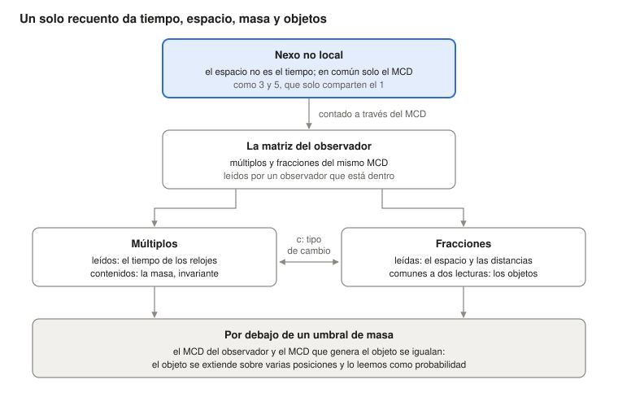

¿Quién hace cumplir las leyes de la física? Nadie, si la materia es la relación misma
Ugo Lanciano · Investigador independiente, Locri (Italia) · ORCID 0009-0008-7618-9635
Versión 2.68.1, 2026-10-26 · Archivado en Zenodo: 10.5281/zenodo.23672394 · Licencia CC BY 4.0 · Desarrollado con la ayuda de asistentes de IA, como se declara en el depósito.
El PDF de la versión para estudiantes está en inglés: PDF, versión para estudiantes.
Itinerario de lectura: Fundamentos: por qué se cumplen las leyes · siguiente: MM 2.40.2
¿Primera vez aquí? La Materialidad Matemática en breve: todo el marco en una lectura de 8 minutos.
Versión para estudiantes del depósito MM 2.68.1 (DOI 10.5281/zenodo.23672394), escrita con un asistente de IA a partir del texto archivado; el texto archivado permanece en Zenodo.
Ugo Lanciano · ORCID 0009-0008-7618-9635 · Materialidad Matemática (MM) 2.68.1 · texto archivado del 26 de octubre de 2026
De qué trata. Este texto presenta la Materialidad Matemática (MM), un marco que lee la física a partir de las relaciones. Muestra la idea básica, la pone a prueba en un reloj y dice cómo lee el marco el espacio, los objetos, la masa, la mecánica cuántica y el tiempo. Al final recoge cuatro objeciones de filósofos y las respuestas del autor.
Cómo leerlo. El texto está pensado para estudiantes de física o de filosofía. Cada palabra técnica se explica la primera vez que aparece. Las palabras propias de MM también están reunidas en el glosario final. Cómo se hizo el trabajo (registros previos, comprobaciones, ficheros) se cuenta en la última sección.
La pregunta: ¿quién garantiza las leyes de la física?
Las leyes de la física valen en todas partes y siempre. Un electrón aquí y un electrón en una galaxia lejana siguen las mismas reglas. Sin embargo, nadie las hace cumplir: no hay un policía de la naturaleza. Entonces, ¿qué las garantiza?
La Materialidad Matemática (MM) responde así: la materia no obedece a una relación, la materia es la relación. Este texto expone la tesis. Luego la desarrolla en un reloj, con dos premisas declaradas. Por último muestra cómo lee el marco el espacio, los objetos, la masa, los cuantos y el tiempo.
La idea en tres puntos.
- Las leyes no tienen guardián. Una cosa que las violara no sería desobediente: sería otra cosa.
- No hay un mundo detrás de las relaciones. El mundo que vemos es la trama de las relaciones, leída desde dentro.
- Las matemáticas funcionan sobre el mundo porque son la forma de una relación del mundo, liberada en la mente.
Las dos respuestas clásicas. La pregunta tiene dos respuestas tradicionales. Ambas dejan una brecha entre la regla y la materia.
- La primera pone la ley en un «cielo de las formas», un mundo de ideas separado de las cosas, como en Platón. Entonces no está claro cómo toca la ley a la materia.
- La segunda pone la ley en nuestro lenguaje: las leyes serían descripciones hechas por nosotros. Entonces no está claro cómo acierta el lenguaje con el mundo.
Hay también una idea más reciente: el universo sería una simulación por ordenador. Esta hipótesis pone a un programador en el lugar del cielo de las formas. Vazza (2025) estimó que nadie podría pagar la energía que necesitaría una máquina que simulara el universo.
El Gran Vuelco. MM no construye un puente sobre la brecha: dice que no hay brecha. En el marco, este movimiento se llama el Gran Vuelco. La ciencia ya lo ha hecho cinco veces. Cinco cosas parecían sustancias y resultaron ser relaciones:
- el calórico, el fluido que se creía que llevaba el calor de un cuerpo a otro;
- el flogisto, la sustancia que se creía que salía de los cuerpos al arder;
- la fuerza vital, que se creía que distinguía la materia viva de la no viva;
- el éter, el medio en el que se creía que viajaba la luz;
- el kilogramo patrón de París, el cilindro de metal que durante mucho tiempo fue el kilogramo mismo; hoy el kilogramo se define por una razón ligada a la constante de Planck.
Cada vez el mundo siguió siendo el mismo. MM aplica el mismo movimiento a los dos últimos elementos: la materia y la ley.
Las palabras del marco. Ocho palabras se repiten en todo el texto. Aquí basta su sentido; cada una se retoma donde hace falta y en el glosario final.
- Nexo: el vínculo de partida entre dos términos distintos. El ejemplo de referencia es el vínculo entre los números 3 y 5.
- No local: no situado en el espacio y en el tiempo. Es un sentido «pregeométrico», es decir, anterior a la geometría. No significa acción a distancia (§1).
- MCD: el máximo común divisor, es decir, la única parte que los dos términos tienen en común. Para 3 y 5 es 1.
- Copias: las repeticiones de la unidad común cuando se cuenta el nexo. El 3 contiene tres copias del 1, el 5 contiene cinco.
- Matriz: el conjunto de múltiplos y fracciones del MCD, leído por quien está dentro de él. Aquí «matriz» no significa una tabla de números del álgebra lineal. Los múltiplos aparecen como tiempo, las fracciones como espacio.
- Difracción: el modo en que la matriz del observador se divide en fracciones para dar un objeto.
- Registro: lo que un observador ha reunido. En los cálculos es la traducción, elegida por la IA, de la matriz del observador.
- La traducción de la IA: el modo en que una frase del autor se convierte en una cantidad calculable. Es una elección, y el texto la señala. Un resultado que depende de una traducción se refiere a esa traducción, no a la premisa.
Las premisas explicativas (IA). El texto contiene también algunas «premisas explicativas (IA)». Son puentes propuestos por la inteligencia artificial entre una frase del autor y su traducción a un cálculo. El autor las aceptó en el texto el 26 de octubre. No son tesis del autor, y le dejan preguntas abiertas (§10).
1. El punto de partida: dos términos distintos y lo único que tienen en común
Las premisas filosóficas de MM caben en cinco frases. Tienen la forma lógica de la relación entre 3 y 5. Son los postulados de MM, como aquellos de los que partió Einstein para la relatividad: no se demuestran, se valoran por sus consecuencias.
Un recordatorio de aritmética. Dos números enteros son coprimos cuando no tienen más divisores comunes que el 1. 3 y 5 son coprimos. 6 y 9 no lo son: tienen el 3 en común. El máximo común divisor (MCD) es el mayor número que divide a ambos. El mínimo común múltiplo (m.c.m.) es el menor número que es múltiplo de ambos. Para 3 y 5, el MCD es 1 y el m.c.m. es 15.
Las cinco premisas:
- Al principio hay una diferencia. No hay una cosa: hay una diferencia. A es distinto de B.
- Existir es recíproco. Dos entes existen el uno para el otro solo a través de lo que tienen en común. Sin nada en común ni siquiera podrían llamarse distintos.
- Dos entes sin nada más en común son coprimos. A dos entes de partida no se les atribuye nada, salvo el hecho de ser dos entes distintos: el ser-dos. Así que no tienen partes compuestas en común: son coprimos, como 3 y 5. Una parte común mayor, como el 3 que comparten 6 y 9, sería un tercer ente, y pediría una razón más.
- La unidad común se cuenta. En común solo queda la unidad: MCD(3, 5) = 1. Para pertenecer a ambos, la unidad tiene que contarse en cada uno: tres veces en uno y cinco en el otro. Aquello en lo que algo se repite tiene partes, posiciones, distancias: se ha vuelto local, es decir, situado en el espacio y en el tiempo.
- Las copias son la misma unidad. Tres copias de la unidad son la misma unidad contada tres veces. Entre dos copias de la misma cosa no hay distancia. Así el mundo local lleva dentro de sí, disfrazado de número, el vínculo sin distancia del que partió.
El primer nexo: espacio y tiempo. El primer nexo es el que hay entre el espacio y el tiempo. En su fase no local el espacio y el tiempo son términos sin medida. Solo hay una distinción lógica: el espacio no es el tiempo. Los dos comparten solo su MCD. Cuando se cuentan, se convierten en el espacio y el tiempo que medimos. Esta fase no es un nivel lejano: está presente en cada lugar y en cada instante.
Cuatro rasgos del nexo. La relación entre 3 y 5 tiene cuatro rasgos, y son los rasgos del nexo.
- Ningún intermediario. 3 y 5 están unidos por el 1 sin ningún número «en medio» que lleve el vínculo. Esto es lo que significa «no local»: la relación no está situada en un lugar ni en un instante, y no viaja por un camino.
- Los términos no vienen antes de la relación. El 1 no es un ladrillo a la espera de que lo usen. Aparece como lo único que los dos tienen en común.
- Contar hace el espacio y el tiempo. El mínimo común múltiplo, 15, contiene el 3 cinco veces y el 5 tres veces. En la matriz que nace del contar, los múltiplos aparecen como tiempo y las fracciones como espacio. Cuando se combinan varios recuentos (§2), el tiempo es su crecimiento común y el espacio es su dispersión, es decir, cuánto difieren entre sí los recuentos individuales.
- Contar conserva el nexo. MCD × m.c.m. = 1 × 15 = 3 × 5. Se cuente como se cuente en el mundo local, el producto sigue siendo el de la relación de partida.
Premisa explicativa (IA): por qué números. Los números no son cantidades de espacio y de tiempo: en la fase no local el espacio y el tiempo no tienen medida. 3 y 5 son la forma aritmética de una situación lógica: dos términos distintos que solo tienen una unidad en común. El contar entra con la premisa 4. Lo que es común, para pertenecer a ambos, debe aparecer en cada uno; y aparecer varias veces ya es contar. Que los dos recuentos difieran se sigue de la premisa 1: dos términos iguales serían uno. Un caso concreto aparece en el modelo del reloj (§2). Allí el paso en reposo (1, 1) no distingue las dos direcciones de la luz. La asimetría entre dos recuentos coprimos, como (3, 5), es en cambio lo que se lee como movimiento.
La lectura de la IA del tiempo y el espacio. Sobre la unidad común pueden hacerse dos operaciones: multiplicarla y dividirla. La multiplicación da una sucesión ordenada de totales crecientes: 1, 2, 3 y así sucesivamente. La división da partes distintas de un total que sigue siendo el mismo. Leída desde dentro, la primera es lo que llamamos tiempo, la segunda lo que llamamos espacio. El tiempo y el espacio no vienen antes del contar: son los nombres físicos de la acumulación y de la partición de la misma unidad.
Las palabras del autor. El autor lo dice así (10 de octubre): «esiste un gradino sottostante della realtà dove uno strato non locale di logica materiale ha in sé le caratteristiche per generare il gradino di spazio e oggetti sovrastante» («existe un peldaño subyacente de la realidad donde un estrato no local de lógica material tiene en sí las características para generar el peldaño superior de espacio y objetos»). El error común, añade, es partir de un espacio objetivo como elemento necesario. En el volumen MM 2.30 este es el programa pregeométrico: un programa en el que la geometría del espacio no es el punto de partida, sino que tiene que salir del marco. Las secciones que siguen dicen cuánto se ha llevado a cabo.
Qué significa «no local»
La no localidad es el fundamento del marco. En la filosofía de la física la palabra tiene al menos cuatro sentidos. MM usa uno, deriva un segundo como consecuencia y excluye los otros dos.
Un recordatorio: el teorema de Bell. El teorema de Bell (1964) se refiere a dos partículas preparadas juntas y luego medidas lejos la una de la otra. Bell mostró que ciertas correlaciones entre las mediciones no pueden reproducirse si se cumplen a la vez tres supuestos:
- cada sistema lleva propiedades propias, que las mediciones revelan (separabilidad);
- ninguna influencia viaja más rápido que la luz;
- quien mide elige qué medir con independencia del estado de la fuente (independencia de los ajustes de medición).
Los experimentos encuentran exactamente esas correlaciones. Por tanto, al menos uno de los tres supuestos tiene que abandonarse.
Los cuatro sentidos de «no local», y qué hace MM con ellos:
- No localización (pregeometría). La relación no está situada en un lugar ni en un instante. En MM: es el sentido del marco, confirmado por el autor el 13 de octubre.
- No separabilidad (holismo). El sistema entero no se reduce a la unión de partes separadas en el espacio, cada una con un estado propio. En MM: es una consecuencia de la premisa. Las copias de un nexo son la misma unidad contada varias veces, no partes separadas.
- No localidad de Bell. Correlaciones que ninguna descripción con los tres supuestos de Bell reproduce. En MM: las correlaciones medidas son un dato. De los tres supuestos, la premisa abandona de raíz el primero, la separabilidad. El modelo de bucle con mediación local (§5), en el que el vínculo va y vuelve por los conos de luz pasando por la fuente, abandona el tercer supuesto: la independencia de los ajustes de medición respecto del estado de la fuente. Ninguna influencia a distancia.
- Acción a distancia. Una influencia o una señal pasa de un lugar a otro más rápido que la luz. En MM: está excluida. No hay señales, y se respeta la cota de Tsirelson (§5).
Las palabras del autor. Además de la frase del 10 de octubre, tres premisas dicen cómo entra lo no local en el mundo local.
- El 13 de octubre la IA propuso leer «no local» como «no situado en el espacio y en el tiempo». El autor respondió: «sì, vale anche per la lettura» («sí, vale también para la lectura»).
- El 24 de septiembre: «MCD originale è il passaggio dallo stadio non locale al [locale] della realtà […] la matrice nasce come diffrazione di MCD nello spazio e nel tempo come elementi separati» («el MCD original es el paso del estadio no local al estadio [local] de la realidad […] la matriz nace como difracción del MCD en el espacio y en el tiempo como elementos separados»).
- El 11 de octubre: «è la base non locale della realtà che forza il cosiddetto presente ad una parte parziale della matrice di cui fa parte l'osservatore; il legame non locale "accende" solo parte della matrice totale» («es la base no local de la realidad la que fuerza al llamado presente a una porción parcial de la matriz de la que forma parte el observador; el vínculo no local "enciende" solo parte de la matriz total»).
Premisa explicativa (IA): en ningún lugar, presente en todas partes. Lo que no está en ningún lugar no está «en otro sitio»: no tiene dónde. En el mundo local aparece como una copia. Por la premisa 5, cada copia es la misma unidad contada una vez más. Por eso la fase no local está presente en cada lugar y en cada instante, sin estar extendida en el espacio: cada lugar y cada instante es una copia de ella. De esto se sigue la no separabilidad. Dos copias de la misma unidad no son dos cosas con estados propios: son dos lecturas del mismo nexo.
Premisa explicativa (IA): el paso y el presente. En las frases del autor el MCD original actúa como bisagra. Allí el espacio y el tiempo, que solo eran distintos, encuentran el elemento común. Luego el nexo empieza a contarse y nace la matriz, es decir, el mundo local. La fase no local no se queda como un origen lejano. Según la premisa del 11 de octubre, selecciona dentro de la matriz la parte «encendida»: el presente de quien observa. Y, por la respuesta del 13 de octubre, el sentido de «no local» vale también para la lectura. Quedan abiertas tres preguntas (§10): qué hace que empiece el recuento, qué distingue la parte encendida del resto, en qué sentido la lectura es no local.
Lo que no se afirma. La fase no local no transmite señales ni influencias. Hoy no tiene una firma experimental propia: en el marco es una premisa. Su papel es dar una razón de dos hechos. El primero: las leyes son las mismas en todas partes (§7). El segundo: los dos extremos de un sistema entrelazado son un solo nexo (§5). Un sistema está entrelazado («entretejido») cuando dos de sus partes, incluso lejanas, no tienen estados separados: las mediciones sobre una están correlacionadas con las mediciones sobre la otra.
Los vecinos. Otras ideas se parecen a esta.
- Para David Bohm (1980) lo que aparece separado está plegado en un todo indiviso, que él llama el «orden implicado».
- Para Mark Van Raamsdonk (2010) la conexión del espacio procede del entrelazamiento.
- La no separabilidad como tesis distinta de la localidad es de Don Howard (1985), que la encuentra en Einstein. Es también de Paul Teller (1986), con el «holismo relacional».
- Sobre la relación entre la no localidad de Bell y la relatividad, la referencia es Tim Maudlin (2011).

Figura 1. Los múltiplos y las fracciones del mismo MCD, leídos por quien está dentro de la matriz, son el tiempo y el espacio. Cuando están contenidos o compartidos, son la masa y los objetos. Las secciones 2-6 siguen este esquema de arriba abajo.
2. Un reloj hecho de 3 y 5: del contar al tiempo de Einstein
El vuelco no es solo una idea: es un procedimiento. En un reloj, con dos premisas declaradas, puede llevarse a cabo hasta el número. El resultado: el reloj que cuenta copias muestra el tiempo propio de Einstein.
Un recordatorio de relatividad. El tiempo propio es el tiempo que muestra un reloj que uno lleva consigo. La relatividad especial dice que un reloj en movimiento muestra menos tiempo que uno en reposo. Si el reloj se mueve con velocidad v, el factor es √(1 − v²), con v medida en unidades de la velocidad de la luz. Se usa un diagrama de espacio-tiempo, con el tiempo en el eje vertical y el espacio en el horizontal: los rayos de luz son rectas inclinadas. Entre dos tics sucesivos del reloj se puede dibujar un diamante de luz, también llamado diamante causal. Está delimitado por los rayos de luz que salen del primer tic, uno a la derecha y otro a la izquierda, y por los que llegan al segundo. Los dos lados del diamante, a y b, medidos a lo largo de las direcciones de la luz, son los lados de luz del paso: sus coordenadas de cono de luz.
El procedimiento tiene cuatro pasos.
- Quitar la sustancia. Se toma una cantidad que parece una cosa, el tiempo que fluye, y se pregunta qué relación es. En MM el tiempo de un reloj procede de las copias que cuenta.
- Escribir la relación como un par. Un paso elemental se describe por el par de sus dos lados de luz, a y b. Aquí entra una premisa, llamada B en el depósito MM 2.40: los dos lados son números enteros coprimos, y el paso no puede dividirse. Cuando el reloj está en reposo los dos lados son iguales y el paso es (1, 1); cuando se mueve son distintos, como (3, 5). Las copias surgen en los múltiplos comunes, y el diamante de luz contiene a × b = MCD × m.c.m. celdas.
- Combinar las dos direcciones. Una segunda premisa, llamada C: dos direcciones opuestas no se suman, se multiplican. El reloj muestra √(a × b), la media geométrica de los dos lados. El laboratorio, que suma, mide (a + b)/2, la media aritmética.
- Comparar con la ley conocida. Con 3 y 5 el reloj muestra √15 ≈ 3,873. El laboratorio muestra (3 + 5)/2 = 4. La razón entre los dos tiempos es 0,968. En el laboratorio el tiempo del paso es (a + b)/2 y el desplazamiento es (b − a)/2: la velocidad es su razón, (5 − 3)/(5 + 3) = 2/8, es decir, un cuarto de la velocidad de la luz. Para esa velocidad la relatividad da √(1 − 1/16) = 0,968: el mismo número.
Premisa explicativa (IA): por qué el producto y no la suma. El cuarto rasgo del nexo dice que contar conserva el producto. Las copias de un paso llenan a × b = MCD × m.c.m. celdas. La duración del paso debe medirse, por tanto, con una operación que conserve el producto. Se toma el producto ab, y su raíz cuadrada √(ab) para volver a la escala de un solo recuento. Es como el lado del cuadrado que tiene el mismo número de celdas que el rectángulo a × b. Por ejemplo, un rectángulo de 3 × 5 tiene 15 celdas, y el cuadrado de 15 celdas tiene lado √15 ≈ 3,873. La suma a + b, en cambio, cambia cuando cambia la asimetría entre los dos lados.
Qué cambios de observador conservan el nexo. Pasar a un observador en movimiento uniforme respecto del primero significa alargar un lado de luz por un factor k y acortar el otro por el mismo factor: a se convierte en ka y b se convierte en b/k. Así el producto ab = (ka)(b/k) no cambia. El factor k es el del cálculo k de Hermann Bondi (1964): una manera de hacer relatividad especial solo con señales de luz, como impulsos de radar, en la que k es el factor Doppler relativista. Aquí k entra como la transformación que conserva el producto, no como un supuesto colocado antes.
El factor de Einstein entra con la premisa C. A partir de ahí es una identidad, es decir, una igualdad siempre verdadera. La media aritmética supera a la geométrica, salvo cuando los lados son iguales. Su razón es siempre √(ab)/((a + b)/2) = √(1 − v²). Es la identidad del cálculo k de Bondi (1964). De ella Kevin Knuth y Newshaw Bahreyni (2014) derivan la métrica de Minkowski y las transformaciones de Lorentz. Son la geometría del espacio-tiempo en la relatividad especial y las reglas para pasar de un observador a otro.
Lugares asignados o no. El depósito MM 2.40 añade una prueba que toca la filosofía del espacio. Una tercera premisa, llamada A, dice que los sucesos no se asientan en lugares dados de antemano. En los cálculos las copias se esparcen al azar, de modo uniforme. Es un supuesto añadido: la premisa lo motiva pero no lo impone.
Premisa explicativa (IA). La premisa A es el segundo rasgo del nexo (§1) aplicado a los sucesos: los términos no vienen antes de la relación. Los lugares dados de antemano serían términos que existen antes de las relaciones. Serían, es decir, el contenedor que el vuelco elimina.
La prueba compara dos maneras de leer el tiempo. La primera lee la cadena más larga de copias: partiendo del primer vértice del diamante, salta de una copia a otra, siempre hacia el futuro, dentro de los conos de luz, y cuenta el mayor número de saltos con el que llega al último vértice. La segunda cuenta las copias multiplicando los dos lados, con √(ab).
- Con 200 000 copias esparcidas al azar, el reloj que lee la cadena más larga muestra √(1 − v²) dentro del 1 %.
- Si en cambio las copias se asientan en una malla regular, con lugares fijos e instantes iguales para todos (síncrona), la misma cadena da la media aritmética (a + b)/2, es decir, el tiempo absoluto de Galileo, que no se ralentiza con el movimiento. Si los lugares son fijos pero los tiempos se sortean al azar, la ralentización supera a la de Lorentz en un 7-29 %.
- En la misma malla, el reloj que cuenta las copias multiplicando los dos lados recupera en cambio a Einstein, dentro del 0,43 %.
Para un reloj que lee cadenas de sucesos, por tanto, los lugares fijados antes de los sucesos actúan como un sistema de referencia privilegiado y rompen la relatividad. Un reloj que cuenta copias recupera la relatividad incluso en la malla.
Antes de los cálculos el depósito había escrito un criterio registrado: una regla fijada de antemano para decir cuándo tiene éxito el conjunto de pruebas, llamado P1-P5. El depósito declara que el criterio no se cumplió: una prueba a v = 0,8 quedó fuera de la tolerancia del 6 %.
Más de dos lados: la regla de los pares (MM 2.40.2, 25 de octubre). Si un reloj tiene n lados contados, la premisa «las direcciones opuestas se multiplican» puede extenderse de dos maneras. Para n = 2 las dos maneras coinciden.
- La regla del producto: el reloj muestra la media geométrica de todos los lados.
- La regla de los pares: los lados se multiplican de dos en dos, para todos los pares de lados distintos, y los productos se suman: Q = Σ xᵢxⱼ. El reloj muestra √Q. Por ejemplo, con tres lados x, y y z se tiene Q = xy + xz + yz.
Premisa explicativa (IA): por qué pares. El nexo es una relación entre dos términos (premisa 1). Con más lados cada par es un nexo, y la regla de los pares suma los nexos. La regla del producto de n lados sería en cambio una relación entre n términos a la vez, que las premisas no contienen.
Con la regla de los pares el crecimiento común de los lados es el tiempo, y su dispersión es el espacio. n lados dan un tiempo y n − 1 direcciones de espacio, equivalentes en la forma. Se ve por el álgebra. Si m es la media de los lados, Q = [n(n − 1)·m² − Σ(xᵢ − m)²]/2. El primer término, el crecimiento común, tiene signo más: es el tiempo. El segundo, la dispersión de los lados en torno a la media, tiene signo menos y n − 1 direcciones independientes, porque las desviaciones respecto de la media suman cero: es el espacio. Es la forma de la métrica de Minkowski, t² − x² − y² − z². Tres lados dan un espacio-tiempo 2+1, es decir, dos direcciones de espacio y una de tiempo. Cuatro lados dan 3+1, como el espacio-tiempo que observamos. La regla del producto, de tres lados en adelante, no tiene transformaciones de Lorentz.
Lo que dicen los cálculos. Las pruebas se hicieron sobre estructuras construidas a partir de cuatro recuentos independientes.
- La regla de los pares da una dimensión de espacio-tiempo de 3,92 ± 0,11, cercana a 4. El valor se mide en los seis intervalos que están casi por entero dentro de la región estudiada, para evitar efectos de borde; en todos los intervalos es 3,61. Un intervalo, aquí, es la región entre dos sucesos, como el diamante de luz de un paso.
- Para el primer observador, los relojes en movimiento reproducen la ralentización de la relatividad dentro del 2 %: la razón entre el valor medido y el esperado es 0,981 y 0,998. La regla del producto se desvía un 12 %.
- Dos predicciones registradas no se cumplieron: la dimensión estimada a partir de la cadena más larga (3,45) y la comparación entre dos observadores.
- La isotropía de las estructuras, es decir, el hecho de que todas las direcciones sean equivalentes, no se probó.
- En total: 20 pruebas superadas, 4 no superadas, 4 no evaluables.
Lo que ya se sabía. El álgebra es conocida. Son los «marcos nulos», conjuntos de direcciones de luz usados como referencia, de Zeeman (1964), Derrick (1981), Coll y Morales (1991). Knuth (2016) informa de que con cadenas coordinadas solo existe una medida coherente para dos o cuatro cadenas. La regla no dice cuántos lados hay. El cuatro es un dato de entrada, elegido para coincidir con el espacio-tiempo observado. La sección siguiente propone una lectura de él.
3. ¿Cuántas dimensiones? Dos por una regla, la tercera por los datos
MM admite las tres dimensiones del espacio, como la física actual, que las toma como dadas. El autor lo dice (25 de octubre): «MM ammette le tre dimensioni, è parimenti efficace per ora» («MM admite las tres dimensiones; por ahora es igualmente eficaz»). Hay argumentos conocidos sobre por qué el espacio tiene tres dimensiones. Se refieren a la estabilidad de las órbitas y a la posibilidad de que existan observadores (Ehrenfest 1917; Tegmark 1997). Por ejemplo, Ehrenfest observó que con más de tres dimensiones las órbitas de los planetas no serían estables. Son argumentos, no derivaciones.
Dos direcciones por una regla. Una premisa del 24 de octubre dice: «MCD ha il descrittore spazio, il descritto tempo e se stesso» («el MCD tiene el descriptor espacio, lo descrito tiempo y a sí mismo»). La IA tradujo los tres aspectos como tres recuentos independientes. Con la regla de los pares, tres recuentos dan un tiempo y dos direcciones de espacio. La prueba sobre estructuras construidas a partir de tres recuentos dio una dimensión de espacio-tiempo de 2,98 ± 0,05 (MM 2.40.2).
Premisa explicativa (IA): descriptor y descrito. La IA lee así las dos palabras del autor. El descriptor es el punto de vista que lee; lo descrito es lo que se lee. El espacio describe, porque es donde la lectura coloca las cosas. El tiempo es descrito, porque es lo que, una vez leído, se acumula. El MCD es el tercer aspecto porque la premisa 2 lo hace necesario: es aquello a través de lo cual los dos existen el uno para el otro, y no se reduce a ninguno de ellos. Una premisa del 27 de septiembre tiene la misma estructura en tres partes: «top tempo, gli altri due spazio e specchio di se stesso» («top tiempo, los otros dos espacio y espejo de sí mismo»).
El presente es una superficie. Premisa del 25 de octubre: «il 3+1 che misuriamo lo misuriamo in una complicazione di matrice in MM, non nel presente fisico, dove 2+1 è l'immediato che esiste» («el 3+1 que medimos lo medimos en una complicación de la matriz en MM, no en el presente físico, donde 2+1 es lo inmediato que existe»). El 2+1 es la geometría de lo inmediato, es decir, de lo que existe en el presente. La tercera dirección del espacio está en el modo en que se componen las lecturas.
La idea de que el punto de partida es una superficie tiene un precedente conocido: el principio holográfico ('t Hooft 1993; Susskind 1995). Dice que la información contenida en una región puede escribirse en la superficie que la encierra, como en un holograma. MM no retoma sus cálculos.
Premisa explicativa (IA): por qué lo inmediato se detiene en 2+1. Lo inmediato es el nexo leído de una vez, con sus tres aspectos y nada más. Un nivel más daría una tercera dirección de espacio, y no un segundo tiempo. La razón está en la regla de los pares. El crecimiento común de todos los recuentos sigue siendo siempre uno, y es el tiempo. Cada recuento independiente adicional aumenta en cambio la dispersión, y añade, por construcción, una dirección de espacio.
La tercera dirección por los datos. ¿Por qué solo un nivel por encima de lo inmediato? El autor responde: «Perché così è fatta la matrice desunta dai dati» («Porque así está hecha la matriz deducida de los datos») (25 de octubre). La IA comparó dos maneras de traducir este nivel adicional, en un trabajo exploratorio del 25 de octubre, aún no depositado y aún no comprobado por un segundo sistema:
- repetir lo inmediato: una pila de copias de la misma superficie, como hojas idénticas apiladas. El espacio sigue siendo plano.
- anidarlo por múltiplos: cada nivel dentro del anterior, como cajas una dentro de otra. El espacio se curva después de pocos pasos, como una geometría hiperbólica.
Una geometría hiperbólica tiene curvatura negativa: al alejarse de un punto, el espacio disponible crece más deprisa que en un espacio plano. Una silla de montar da una idea de ella.
La prueba no sirve para contar las direcciones del espacio: la construcción las fija en tres, al añadir un nivel a lo inmediato 2+1. Sirve para comparar la forma, es decir, la curvatura que resulta. El espacio observado es plano. Lo muestra el parámetro de curvatura Ω_k, que es cero para un espacio plano. Las mediciones dan Ω_k = 0,0007 ± 0,0019. Proceden del satélite Planck (resultados de 2018), que midió la radiación que quedó del universo primitivo, junto con las oscilaciones acústicas de bariones: huellas de antiguas ondas sonoras en la distribución de las galaxias, usadas como regla de medir. Los datos eligen la pila. Queda un punto por comprobar: que este nivel entre en la regla de los pares como un cuarto lado igual a los otros tres. Solo así la tercera dirección del espacio es indistinguible de las otras dos, como requiere la isotropía observada.
Un resultado ya conocido. Que una jerarquía de celdas anidadas dé una geometría hiperbólica es un resultado conocido.
- En física, Brian Swingle (2012) lee las redes de renormalización del entrelazamiento (MERA) como una versión discreta del espacio anti-de Sitter, que es hiperbólico. Una red MERA describe un estado cuántico capa a capa, a escalas cada vez mayores.
- En matemáticas, Mario Bonk y Oded Schramm (2000) muestran que añadir a un espacio sus escalas, como una dirección más, da un espacio hiperbólico: el «cono hiperbólico».
La conclusión «los datos eligen la pila» no descansa, por tanto, solo en el trabajo no depositado.
Ley e historia. Aquí MM traza una frontera que interesa al filósofo. En el marco, con la regla de los pares:
- lo que se sigue de la identidad de las relaciones es ley: el factor de Einstein, el tiempo como crecimiento común, el espacio como dispersión;
- lo que se lee de la medición es historia: el número de niveles, el valor de las masas individuales, la intensidad de la fuerza fuerte.
Para las masas el autor usa una imagen: «è come se da una casa completa e finita si dovesse derivare la storia di un singolo mattone» («es como si de una casa completa y terminada hubiera que derivar la historia de un solo ladrillo»). Se le preguntó con qué frecuencia, en el modelo, la historia de un electrón cambia de dirección. Añadió: «la parola quanto spesso in sé non esiste, ma è legata alla storia del singolo mattone che stai prendendo in considerazione» («la expresión "con qué frecuencia" no existe en sí misma, sino que está ligada a la historia del ladrillo individual que estás considerando»). MM no promete deducirlo todo. Promete que lo que se lee cabe en un solo marco, sin contradicciones.
4. Objetos y masa: lo que lee quien observa
En el marco de MM las fracciones del recuento dan los objetos y las distancias; los múltiplos dan el tiempo y la masa. Dos depósitos del 24 de octubre, corregidos el 25, ponen a prueba traducciones de estas dos tesis: MM 2.62 y 2.62.1 sobre los objetos, MM 2.64 y 2.64.1 sobre la masa. Las versiones corregidas señalan los lugares en los que una elección de la IA se había presentado como un resultado.
Qué es un objeto
La tesis del autor. Los objetos observados son autónomos en sus relaciones locales. Sin embargo, están ligados a quien observa por una difracción, en fracciones, de la matriz del observador. Sobre dos observadores, la premisa del 23 de octubre dice que su matriz, «pur non essendo globalmente uguale, è in larga percentuale uguale, tanto da legarsi alla stessa proiezione, ossia gli oggetti fisici in comune osservati» («aun no siendo globalmente igual, es igual en un gran porcentaje, tanto como para ligarse a la misma proyección, es decir, a los objetos físicos observados en común»). El modelo no puso a prueba esta frase.
Premisa explicativa (IA): qué significa «difracción». En MM «difracción» es un término del marco. La IA lo lee por analogía con la óptica. Una rejilla de difracción es una placa con muchas rendijas paralelas. Divide una sola onda de luz en «órdenes»: haces separados, cada uno una fracción bien definida del total. Del mismo modo la matriz del observador, que es una, se divide en fracciones, y una fracción que se lee es un objeto. En la ontología del autor las matrices de dos observadores se solapan en gran parte. Esto evita el solipsismo, la idea de que solo existe la mente de quien observa, sin volver a poner una sustancia detrás de las relaciones. La traducción que sigue expresa el solapamiento como la parte común de dos registros. No deriva, sin embargo, por qué los dos registros coinciden.
Los vecinos. Hay que nombrar primero a los más cercanos.
- El darwinismo cuántico de Wojciech Zurek. La información sobre un sistema se copia muchas veces en el entorno, por ejemplo en la luz que el sistema dispersa. Muchos observadores pueden leerla de forma independiente y encontrar el mismo valor. Zurek habla de «existencia relativamente objetiva».
- La mecánica cuántica relacional, en la que el estado de un sistema es siempre relativo a otro sistema, y los vínculos entre las perspectivas de observadores distintos (Adlam y Rovelli 2023).
Hasta donde hemos buscado, sin embargo, ningún estudio define el objeto mismo como la parte común de los registros de dos observadores.
La traducción puesta a prueba. Es una elección de la IA. La matriz del observador se expresa por su registro. El objeto que dos observadores ven es la parte común de sus registros. Es lo que cada uno lee de su propio registro, sin mirar el del otro, encontrando el mismo valor que el otro. En teoría de la información esta cantidad se llama parte común de Gács–Körner. El modelo es el del darwinismo cuántico. Hay una fuente que puede tener dos valores. Hay muchos «portadores» dispersos, como los fotones dispersados, que copian el valor de la fuente con algún error. Y hay dos observadores, que reúnen cada uno un grupo de portadores.
Los resultados:
- Se descarta: la lectura «el objeto es tener la misma estadística». Dos observadores que lanzan cada uno su propia moneda encuentran la misma estadística, mitad caras y mitad cruces, pero no observan el mismo objeto.
- No es conforme a los criterios, pero no queda excluida: la lectura «el objeto es materia compartida», es decir, la idea de que para ver el mismo objeto dos observadores deben reunir los mismos portadores. En el modelo, de hecho, dos observadores con 63 portadores cada uno y ninguno en común ya coinciden sobre el valor de la fuente, con un margen de una parte en un millón.
- Compatible: la parte común. Si las copias son imperfectas, la parte común exacta es cero hasta que se comparan los registros. Por eso se admite una pequeña probabilidad de desacuerdo: la tolerancia declarada δ = 10⁻⁶, con copias que se equivocan una vez de cada diez. La parte común sigue siendo cero mientras cada observador tenga hasta 22 copias. Con 23 copias el desacuerdo baja de δ, y el objeto entero aparece de golpe. Con δ = 10⁻³ y δ = 10⁻⁹ los números correspondientes son 11 y 37 copias.
- Un objeto con más valores llega por escalones. Aquí la fuente puede estar en doce celdas; las copias están difuminadas y pueden equivocarse en una celda; la tolerancia es la misma. Con 82 copias los dos observadores coinciden en qué mitad de las celdas contiene el objeto; con 88 en qué tercio, con 91 en qué cuarto; con 101 en la celda individual, es decir, en el objeto entero. Son cotas inferiores, dentro de la clase de lecturas probadas.
La lectura propuesta. El objeto no es una cosa dada antes de las lecturas, ni una imagen privada: es lo que dos lecturas tienen en común. La silla no se elimina del modelo: sigue siendo una parte de la estructura, con un estado propio. Lo que la tesis elimina es un objeto común adicional, dado antes de los registros. El depósito no deriva la objetividad y no resuelve el problema de la medición. Es la pregunta de cómo, en mecánica cuántica, una superposición de posibilidades da un solo resultado observado.
Qué es la masa
La tesis. El mismo contar es tiempo cuando se lee, y es masa cuando está contenido directamente en la matriz del punto de observación.
La física ya liga la masa y el tiempo.
- Toda masa lleva un ritmo: la frecuencia de Compton mc²/h, donde m es la masa, c la velocidad de la luz y h la constante de Planck. Cuanta más masa tiene un cuerpo, más rápido es su ritmo.
- Todos los cuerpos caen del mismo modo, sea cual sea el material del que están hechos, con un margen de unas pocas partes en 10¹⁵. Este es el principio de equivalencia.
Premisa explicativa (IA). Un múltiplo que se lee se convierte en una serie de sucesos distintos: es el tictac de un reloj, es decir, el tiempo. Un múltiplo contenido sigue siendo el mismo en cada lectura. Si quien observa copia el cuerpo en cada tic, encuentra que esta parte no cambia. Lo que cambia entre las lecturas es el tiempo; lo que sigue siendo igual es la masa. Por eso la masa aparece como un invariante, una cantidad que no cambia entre las lecturas. Es la lectura que la traducción M-i, más abajo, pone a prueba.
Los resultados:
- Se descarta: la lectura «pesa el número de piezas», es decir, la idea de que lo que pesa es la suma de las masas de las piezas tomadas una a una, sin la energía que las mantiene unidas. El titanio y el platino tienen enlaces distintos: con esta lectura caerían con una diferencia de 7,5 × 10⁻⁴. El satélite MICROSCOPE, que comparó la caída de masas de prueba de titanio y platino, no ve ninguna diferencia con una precisión de unos 10⁻¹⁵.
- Compatible: tres lecturas que tratan «contenido» como una propiedad del cuerpo. Coinciden con la física estándar por identidad o por construcción. La primera es la masa como ritmo de Compton. La segunda es la masa de Komar, un modo de la relatividad general de calcular la masa de un cuerpo a partir de su campo gravitatorio. La tercera es la masa como techo de los estados distintos: como máximo dos por ciclo de Compton (Margolus y Levitin 1998). El teorema de Margolus y Levitin dice que un sistema con una energía dada no puede pasar por estados completamente distintos más rápido que cierto ritmo.
- La traducción M-i (25 de octubre) es la más cercana a las palabras del autor. Quien observa copia el mismo cuerpo en cada tic de su propio reloj. Lo que cambia entre las copias es el tiempo leído. Lo que sigue siendo igual es el múltiplo contenido, y su tamaño es la masa. Entre observadores en movimiento, lo que queda en común es la masa invariante, la que todos los observadores encuentran igual.
La lectura que resulta. La masa no es una sustancia encerrada dentro del cuerpo: es lo que sigue siendo idéntico a través de las lecturas. Es la misma idea con la que Eugene Wigner (1939) clasificó las partículas: la masa como un invariante de las transformaciones entre observadores. Hay que señalar tres límites. Hoy ninguna traducción da números distintos de los de la física conocida. Las lecturas compatibles no son pruebas independientes. No se deriva ninguna masa individual.
En el marco, los objetos y la masa son dos caras del mismo contar. Las fracciones leídas en común por dos observadores dan los objetos. Los múltiplos contenidos e invariantes dan la masa.
5. Mecánica cuántica: dónde nace la probabilidad
El mismo marco que lee el espacio, el tiempo, los objetos y la masa admite la mecánica cuántica. No cambia sus predicciones, pero propone dónde nace la probabilidad. El trabajo del periodo está en tres premisas (13 y 22 de octubre), en los depósitos MM 2.48 (14 de octubre) y 2.66 (25 de octubre) y en la versión 2.48.1 (26 de octubre).
Dos recordatorios. La regla de Born da las probabilidades de la mecánica cuántica: la probabilidad de un resultado es el cuadrado del módulo de su amplitud, |ψ|². La cota de Tsirelson se refiere a la prueba más usada del teorema de Bell, que combina cuatro correlaciones en un solo número. Si cada sistema tiene propiedades propias y locales, el número no supera 2. La mecánica cuántica llega como máximo a 2√2: esta es la cota de Tsirelson.
No localidad sin señales. En el entrelazamiento dos sistemas lejanos permanecen correlacionados, sin que nada viaje directamente de uno a otro. Para MM esta es la huella de la fase no local del nexo, donde «no local» significa no situado en el espacio y en el tiempo. Si en cada uno de los dos extremos las lecturas siguen la geometría de los estados cuánticos con la regla de Born (la «geometría de Born»), ninguna correlación supera la cota de Tsirelson, 2√2. La medición más precisa da 2,82759 ± 0,00051 (Poh et al. 2015). La cota la fija la lectura local, no el estrato no local, y la no localidad del marco es compatible con los experimentos.
Premisa explicativa (IA): la fase no local y el bucle. Los dos niveles hacen dos trabajos distintos.
- La fase no local, una premisa del autor, dice por qué los dos extremos son un solo sistema: son dos copias del mismo nexo.
- El modelo de bucle, la traducción de la IA en la 2.48, muestra que las correlaciones medidas se reproducen sin influencias fuera de los conos de luz. El cono de luz de un suceso contiene todos los puntos que una señal no más rápida que la luz puede alcanzar. En el modelo el vínculo pasa por la fuente, y nada va directamente de un extremo a otro.
En los términos del teorema de Bell, la premisa abandona de raíz el primer supuesto: la separabilidad, es decir, que cada sistema lleve propiedades propias. El modelo, escrito en los conos de luz, abandona el tercero: la independencia de los ajustes de medición. En la lectura de la IA no son dos escapatorias sumadas, sino el mismo hecho visto desde dos lados. Desde la fase no local es la unidad de los dos extremos; en la lectura local es el cierre de un bucle.
El modelo no hace superflua la premisa. Se puede objetar que, para hacer de los dos extremos un solo sistema, basta el origen común en la fuente. Pero en el bucle el peso de un resultado no procede solo de la fuente. Procede del cierre de toda la historia, hacia delante y hacia atrás: en la 2.48 los futuros ponderados por el cierre del bucle dan la regla de Born. Que esta historia cerrada sea una sola es lo que nombra la fase no local. Quedan abiertas dos cosas (§10): si esto añade algo al origen común, y si los dos lados son realmente el mismo hecho.
La regla la deciden las copias. Premisa del 13 de octubre: «la regola la decide il numero e la correlazione reciproca delle copie del nesso» («la regla la deciden el número y la correlación recíproca de las copias del nexo»). La IA la leyó con Rafael Sorkin (1994).
Un recordatorio. En el experimento de la doble rendija la figura en la pantalla no es la suma de las figuras que da cada rendija por separado. Hay un término adicional, la interferencia, que depende de los pares de rendijas: Sorkin la llama interferencia de segundo orden. Con tres rendijas la mecánica cuántica no predice ningún término nuevo «de tres caminos»: todo se reduce a pares.
En la lectura de la IA la correlación recíproca de las copias es la interferencia de segundo orden: ninguna interferencia irreducible de tres caminos, como exige la mecánica cuántica. Este orden, sin embargo, no fija por sí solo el cuadrado |ψ|². El cálculo que sigue añade supuestos que la premisa no impone: solo pares, y una matriz de Gram, es decir, la tabla de los productos entre las copias tomadas de dos en dos. En el tablero de la 2.40 una partícula avanza a pasos por las direcciones de la luz, en un modelo parecido al tablero de Feynman. En cada paso una «moneda», es decir, una pequeña tabla de pesos, decide cuánto pesa seguir recto y cuánto pesa girar. Las franjas oscuras, donde los caminos se cancelan, aparecen solo con pesos no positivos para los giros, es decir, negativos o complejos. Una moneda con pesos reales, positivos y negativos, da las mismas probabilidades que la que tiene un peso imaginario.
El futuro elige el pasado. Se le preguntó al autor: «¿qué hace que una lectura se escriba en el registro?». Respondió (13 de octubre): «è il futuro di una storia che sceglie il suo passato; quindi la risposta alla tua domanda è il loop» («es el futuro de una historia el que elige su pasado; así que la respuesta a tu pregunta es el bucle»). La lectura es conocida: el formalismo de dos tiempos de Aharonov, Bergmann y Lebowitz (1964), la interpretación transaccional de Cramer (1986), la revisión de Wharton y Argaman (2020). Son lecturas retrocausales: una frontera en el futuro ayuda a fijar el resultado.
Lo que dicen los cálculos:
- Un futuro que elige el resultado da las frecuencias de Born solo con ciertas reglas para ponderar los futuros: por ejemplo, ponderar cada futuro por el cierre de su bucle, hacia delante desde la preparación hasta el futuro y de vuelta. Esta regla de ponderación, la «medida sobre los futuros», no se deriva del modelo: sigue siendo un postulado.
- Un modelo del singlete con mediación local reproduce las correlaciones con cada eslabón dentro de los conos de luz. El singlete es el estado de dos partículas con espines opuestos usado en los experimentos de Bell. En el modelo, el parámetro fijado por la lectura futura de un extremo vuelve a la fuente y sigue hasta el otro extremo. La ley angular, es decir, cómo depende la correlación del ángulo entre las dos mediciones, se supone. La ausencia de señales observables vale solo con el peso de Born, como ya había señalado Argaman (2010).
- Con un peso distinto del de Born, y añadiendo un segundo eslabón (supuesto), un bit podría volver al pasado de quien lo envía: una señal enviada hacia el propio pasado. Las historias consistentes se volverían tan improbables como se quiera. El paso de «improbable» a «no puede existir» es un postulado del autor.
Premisa explicativa (IA). Un peso distinto del de Born haría las historias consistentes tan improbables como se quiera. Excluirlas como imposibles equivale a postular, como hace el autor, que el presente observado requiere un cierre consistente de los bucles. Es un argumento sobre las condiciones del presente, y sigue siendo un postulado.
El precio. Para un filósofo el precio es este: los ajustes de medición no son independientes del estado, porque el futuro entra en su preparación. MM se sitúa entre las lecturas retrocausales con mediación local. Una corrección: la 2.48 corrige las versiones anteriores, que llamaban a MM no local en el sentido del teorema de Bell.
Dónde termina el comportamiento cuántico. Premisa del 22 de octubre: por debajo de cierto nivel de masa, el MCD del punto de observación y el MCD de la difracción que genera el objeto se igualan, como en un espejo. El objeto ya no se asienta entonces en un solo punto, y lo observamos como probabilidad.
Premisa explicativa (IA): dos celdas comparadas. El MCD igual a 1 es el del nexo de partida. La IA lee el MCD de un recuento local como su unidad: la celda más pequeña que distingue, es decir, su resolución. Quien observa lee con su propia celda; el objeto se genera, en la difracción, con la suya. Mientras la celda del observador es más fina que la que genera el objeto, la lectura fija el objeto en un lugar. Cuando las dos celdas se igualan, la lectura no tiene una parte más fina con la que fijarlo, y el objeto se extiende sobre varias posiciones. Es como medir un grano con una regla graduada cuyas marcas son tan grandes como el grano.
El intento de dar un número al umbral (MM 2.66). El depósito 2.66 intentó dar un número al umbral, con lecturas de los dos MCD elegidas por la IA. Para la lectura de la distancia, es decir, de la posición, el límite resulta no ser una sola masa sino una razón. Es el tamaño que hay que distinguir comparado con la celda de las copias que lo distinguen, junto con el número de copias. Por ejemplo, en la decoherencia la celda es la longitud de onda de la luz dispersada por el objeto, y las copias son los fotones dispersados. Coincide con la decoherencia de la física conocida, ahora escrita como regla del marco. La decoherencia es el proceso por el que un objeto, al intercambiar información con el entorno (luz, moléculas de aire), pierde en la práctica los signos de la superposición.
- Dos lecturas de la IA no se siguen de los datos. La primera liga el umbral a la aceleración galáctica: pero cúmulos de sodio de más de 170 000 unidades de masa atómica siguen dando figuras de interferencia (Pedalino et al. 2026). La segunda pone el umbral en la masa del protón, alrededor de 1 unidad de masa atómica: pero un átomo entero de cesio permanece en superposición durante 70 segundos (Panda et al. 2024).
- Otros umbrales siguen siendo posibles, y no son comprobables hoy: en la masa de Planck (22 microgramos) o en m_P/√2; en la masa del observador (70 kg); del tipo de Diósi y Penrose, en los que las superposiciones de grandes masas terminan por sí solas. Hay una predicción registrada con fecha límite del 31 de diciembre de 2035.
Se propone leer la frontera entre lo cuántico y lo clásico donde un objeto se convierte en la parte común de los registros. Es el mismo concepto de objeto que en la sección 4.
La regla de Born a partir del recuento de copias (26 de octubre). La imagen del autor: «se dovete descrivere un 10 per mezzo di un numero 1, sarete costretti a distribuire il descrittore 1 in 10 spazio tempi del numero 10» («si tienes que describir un 10 por medio de un número 1, te verás obligado a distribuir el descriptor 1 en 10 espacio-tiempos del número 10»). La IA lo tradujo así: la amplitud se divide en muchas copias del mismo tamaño («de igual módulo»), y se cuenta cuántas copias caen en cada resultado. En el tablero de la 2.40 esta traducción da exactamente |ψ|² en las 66 razones racionales probadas, es decir, las fracciones con denominador hasta 12. Hacen falta tres supuestos declarados:
- que existan las probabilidades;
- que las copias de igual módulo cuenten lo mismo: es la traducción matemática, hecha por la IA, de la premisa del descriptor distribuido;
- que las probabilidades se sumen sobre copias distintas y sumen 1 en total.
Premisa explicativa (IA). Si un 10 se describe distribuyendo el 1 en diez lugares, en cada lugar está el mismo 1 (premisa 5). El supuesto 2 traduce esta identidad a la probabilidad: la ausencia de diferencias entre las copias se convierte en igual probabilidad de las copias de igual módulo. Es un supuesto declarado, no una deducción.
Para las razones irracionales hace falta además la continuidad. La construcción es análoga a la de Zurek (2005), con una diferencia: aquí la igual probabilidad se declara como premisa, no se deriva. Este es exactamente el paso que Schlosshauer y Fine (2005) cuestionan en la derivación de Zurek. ¿Por qué exactamente el cuadrado, y no otra potencia? Entre los exponentes probados, la moneda de la 2.40 deja invariante, paso tras paso, solo la suma de los cuadrados de los módulos de las amplitudes. El cuadrado viene de ahí, junto con las amplitudes complejas y la superposición lineal. La regla de Born no se deriva, por tanto, sin supuestos, pero tiene un lugar preciso en el marco.
Lo que se puede decir hoy. Hoy ningún experimento distingue MM de la mecánica cuántica estándar. Si el umbral resultara ser una masa, MM se convertiría en una modificación comprobable de la teoría, como los modelos de colapso, en los que las superposiciones se interrumpen por sí solas. Su aportación actual es un lugar: la probabilidad nace donde la matriz del observador y la difracción del objeto se igualan.
6. El tiempo: un presente profundo y una dirección que crece
En MM el tiempo no fluye dentro de un contenedor. El presente tiene una profundidad, y el pasado es lo que el presente contiene. La dirección del tiempo es, para el autor, el crecimiento de las relaciones en la matriz del observador.
Dos tiempos. Premisa del 24 de septiembre: «il tempo fermo del presente può essere profondo fino a 13 miliardi di anni, poi c'è il tempo che percepiamo passare» («el tiempo quieto del presente puede tener hasta 13 mil millones de años de profundidad; luego está el tiempo que percibimos pasar»). El primer tiempo es la profundidad, es decir, el conjunto de las lecturas acumuladas. El segundo es el ritmo local de los relojes.
El principio como lectura presente. Premisa del 20 de octubre, parafraseada: el tiempo verdadero es el tiempo de la matriz, donde el nexo inicial está presente en todas partes. Lo que llamamos el principio del universo es una difracción común, que no existe objetivamente en el presente del observador.
Estados, no épocas. El autor corrige a quien razona por épocas. A una pregunta sobre los «primeros minutos» del universo respondió: «ma i primi minuti esistono per MM? tu pensi ancora per oggetti» («¿pero existen para MM los primeros minutos? tú sigues pensando en términos de objetos»). Las preguntas hay que hacerlas en términos de estados de la materia y cambios de organización, no de lugares y épocas.
El depósito MM 2.58 (21 de octubre) trata de este modo el deuterio primordial, el hidrógeno pesado que, para la cosmología estándar, se formó en los primeros minutos. Las abundancias medidas hoy son lecturas presentes. Se calculan con la nucleosíntesis estándar, la teoría de cómo se formaron los primeros núcleos. Calculadas así, sirven de entrada a una cadena de cálculos (MM 2.58) que llega hasta las galaxias, y que se sostiene frente a los datos tan bien como el modelo estándar. En el marco las abundancias son lecturas del presente. El relato de los «primeros minutos» sigue siendo el modo en que la física conocida da cuenta de esas lecturas.
La dirección del tiempo. Premisa del 24 de octubre: la dirección es «l'ampliamento del numero di relazioni legate a rete dentro la matrice dell'osservatore» («la ampliación del número de relaciones ligadas en red dentro de la matriz del observador»). La física conocida liga la flecha del tiempo al calor, que va de lo caliente a lo frío. Hay, sin embargo, experimentos en los que, con correlaciones iniciales entre las partes, el calor va de lo frío a lo caliente (Micadei et al. 2019).
El autor advirtió que no se ligaran las dos flechas: «la direzione del calore potrebbe in certi casi essere contraria alla complicazione della matrice» («la dirección del calor podría en ciertos casos ser contraria a la complicación de la matriz»). En la 2.64.1 la IA tradujo la matriz como un registro de celdas de memoria que empiezan vacías y copian una parte observada. La memoria se cuenta en bits: un bit es la información de una respuesta de sí o no. En cada banco de pruebas hay instantes en los que el registro y el calor van en direcciones opuestas.
- El banco de pruebas de Micadei reproduce ese experimento: dos espines, correlacionados al principio y a temperaturas distintas. En todos los 2198 instantes en los que el calor va hacia atrás, de lo frío a lo caliente, el registro lleva entre 0,365 y 1,166 bits. La memoria crece mientras el calor retrocede.
- Donde en cambio la memoria es la propia correlación entre los dos espines que el calor consume para ir de lo frío a lo caliente, la memoria baja cada vez que el calor retrocede.
Se sigue una separación: la flecha del registro y la flecha del calor pueden apuntar en direcciones opuestas. Los precedentes son la «jerarquía de flechas» de Jennings y Rudolph (2010) y la inversión del calor sin inversión de la flecha de Latune et al. (2019). Hoy ninguna lectura da predicciones distintas de las de la física conocida.
Una pregunta. ¿Cómo encajan tres frases del autor? La primera es el registro como proyección del pasado: «c'è solo il passato» («solo existe el pasado») (24 de septiembre). La segunda es la dirección del 24 de octubre. La tercera es el bucle en el que el futuro elige el pasado. La pregunta se retoma en la sección 10, y queda cerrada en esta versión, la 2.68.1.
Premisa explicativa (IA): cuatro niveles. Las tres frases pueden hablar de niveles distintos del marco, por encima de un estrato que no tiene tiempo:
- El estrato no local. El espacio y el tiempo son allí solo distintos, sin medida: no hay antes ni después.
- La lectura individual. Qué lectura se escribe se decide en el cierre del bucle entre la preparación y el resultado futuro: «il futuro sceglie il passato» («el futuro elige el pasado»). En el modelo local de la IA esto ocurre a través de un vínculo que va y vuelve por los conos de luz. Se refiere a cómo una lectura llega a escribirse, no a lo que ya está escrito.
- El registro escrito. Lo que está escrito es pasado. Un registro no tiene direcciones espaciales de las que lleguen las lecturas, solo tiene profundidad: «c'è solo il passato» («solo existe el pasado»).
- El crecimiento del registro. El número de relaciones escritas aumenta: es la dirección del tiempo, «l'ampliamento delle relazioni» («la ampliación de las relaciones»).
En esta lectura las frases no se contradicen entre sí. El bucle decide qué entra en el registro; el registro solo contiene el pasado; su crecimiento es la flecha. El autor aceptó esta lectura el 26 de octubre. El cálculo que la traduce está más abajo.
El cálculo único (nuevo en la versión 2.68.1). La IA tradujo la lectura de cuatro niveles a un solo modelo. Los criterios se registraron antes de los cálculos. El modelo reúne cuatro piezas:
- el bucle de la 2.48 elige toda la historia de lecturas;
- el registro de la 2.64.1 recibe los resultados en celdas que empiezan vacías;
- «c'è solo il passato» («solo existe el pasado») se convierte en una condición precisa, que excluye señales del futuro hacia el pasado: la estadística de las primeras lecturas debe seguir siendo la misma tanto si la historia se detiene ahí como si continúa con otras lecturas;
- la dirección es el crecimiento del registro, contado en bits.
Hay dos bancos de pruebas: el tablero de la 2.40, con tres lecturas, y los dos espines del banco de pruebas de Micadei, con cuatro lecturas y calor.
Los resultados principales. Cuando el futuro elige con el cierre del bucle (la regla de la 2.48 que da Born), las tres frases no se contradicen entre sí.
- Las primeras lecturas tienen la misma estadística tanto si la historia se detiene ahí como si continúa. Las celdas ya escritas, de hecho, no cambian, por construcción.
- El registro crece en cada lectura y da las frecuencias de Born.
- En el banco de pruebas del calor el registro crece mientras el calor va en sentido opuesto, tanto en promedio como a lo largo de la historia más probable.
Dos resultados más débiles de lo esperado.
- En el tablero el registro crece menos que el umbral fijado de antemano: 0,29 bits en la segunda lectura y 0,17 en la tercera, frente a 0,5. La razón es que la preparación hace casi predecibles las lecturas posteriores a la primera.
- «Solo el pasado» no selecciona por sí solo la regla de Born. De las cuatro reglas probadas, solo el cierre del bucle la respeta exactamente. Con el umbral fijado de antemano, sin embargo, solo la regla más extrema la viola claramente, aquella en la que el futuro elige de manera determinista. Y la viola solo en una de las dos traducciones del «peso del futuro»: la usada en la 2.48, que da a cada historia una sola componente del futuro (la convención "vettore"). En la otra traducción, que suma las componentes del entorno de la historia (la convención "blocco"), ninguna de las cuatro reglas supera el umbral. Los números del futuro aleatorio y del futuro determinista dependen de esta traducción; los del cierre del bucle no.
Qué elige el futuro. Se le preguntó al autor si el futuro elige toda la secuencia de lecturas en un solo bucle cerrado, como en el cálculo, o cada lectura por sí sola. Respondió el 26 de octubre, después del cálculo: «come nel conto perché la piramide concettuale è determinata dalla direzione imposta al suo vertice» («como en el cálculo, porque la pirámide conceptual está determinada por la dirección impuesta en su vértice»). La traducción adoptada en el cálculo, en la que el futuro elige toda la historia, coincide con su respuesta.
7. Por qué nadie tiene que hacer cumplir las leyes
Si se acepta la premisa, el vuelco da una razón de tres hechos que las respuestas clásicas dejan sin razón: las leyes no tienen guardián, valen en todas partes y son matemáticas. Se siguen tres consecuencias: el universo no necesita una máquina; la velocidad de la luz no necesita una justificación externa; el mundo no desaparece.
Las leyes no necesitan guardián. 3 y 5 no «obedecen» al hecho de tener MCD 1: son ese hecho. Con un divisor común no serían un 3 y un 5 desobedientes: serían otros números. Si la materia es la relación, una cosa que violara la ley no sería castigada: no estaría ahí. La necesidad de las leyes se convierte en una necesidad de identidad, como en aritmética.
Las leyes valen en todas partes y siempre. Para la respuesta clásica la universalidad de las leyes es un hecho bruto: un hecho que simplemente está ahí, sin una razón. En el vuelco cada «aquí» y cada «ahora» es una copia del mismo nexo, y entre dos copias de la misma unidad no hay distancia. Dos lugares no pueden tener leyes distintas por la misma razón por la que dos copias del 1 no son dos unidades distintas. La universalidad de las leyes es la no localidad del nexo vista desde dentro del mundo local. El argumento se refiere a las leyes. Los valores que la sección 3 llama historia, como las masas individuales, proceden de la medición.
Las leyes son matemáticas. Eugene Wigner (1960) habló de la «irrazonable eficacia» de las matemáticas en las ciencias naturales. En el vuelco las matemáticas funcionan sobre el mundo porque son la forma liberada de una relación del mundo. Esta es la lectura de la IA de la tercera respuesta del autor (sección 10). El mundo local está hecho de recuentos, y contar es aritmética.
Ninguna máquina. El universo sigue reglas exactas, hechas de recuentos, en todas partes y en cada instante. Pero ninguna máquina las ejecuta y ningún programador las escribió. Una estructura de relaciones no necesita ser calculada para existir. Que una simulación no necesite ejecutarse ya lo había observado Max Tegmark (2008). Vazza (2025) estimó que ejecutarla en una máquina requeriría recursos que las leyes del universo no permiten. El universo se comporta como una simulación sin serlo.
La velocidad de la luz como tipo de cambio. En la relatividad la velocidad de la luz es un principio de partida. En MM es el tipo de cambio fijo entre los múltiplos y las fracciones del mismo MCD, es decir, cuánto espacio vale un paso de tiempo. Funciona como el tipo de cambio entre dos monedas. Superarlo significaría, para algún observador, recorrer espacio sin contar tiempo, es decir, salir del mundo local.
Este tipo de cambio es un relativo necesario: dentro del sistema se convierte en una hipótesis absoluta, igual para todos e insuperable. Fuera del sistema no tiene justificación, porque fuera no hay otro término con el que ponerlo en relación. Pedir su razón desde fuera es como preguntar qué hay al norte del Polo Norte.
El mundo no desaparece. En los cinco vuelcos de la historia el mundo siguió siendo el mismo: desapareció la sustancia, no las cosas. Lo mismo vale aquí. La tesis no es que el mundo no exista. Es que no hay un mundo detrás de las relaciones: el mundo que vemos es la trama de las relaciones leída desde dentro.
8. MM entre otras ideas: vecinos y diferencias
MM es una forma de realismo estructural óntico: la tesis de que en el nivel fundamental hay estructuras, es decir, relaciones, y no cosas con propiedades propias. Está cerca de la variante moderada. Dice qué estructura hay y la desarrolla con la aritmética. Casi cada una de sus tesis tiene un vecino conocido. La lista los nombra primero y dice qué comparte MM y dónde se separa de ellos.
El más antiguo nació en la misma costa jónica desde la que escribe el autor. Pitágoras vivió y enseñó en Crotona desde alrededor del 530 a. C. Filolao, el primer pitagórico que publicó un libro, también está ligado a Crotona.
- Pitagorismo (Pitágoras en Crotona, alrededor del 530 a. C.; Filolao, fragmentos 1 y 4; Aristóteles, Metafísica I 5). Qué sostiene: el orden del mundo está compuesto de cosas ilimitadas y limitantes; todo lo que se conoce tiene número; según Aristóteles, los pitagóricos decían que las cosas son números. En común con MM: el número como estructura del mundo, no solo como medida. Dónde se separa MM: MM no dice que las cosas sean números, y tampoco lo dicen los fragmentos de Filolao. La materia es la relación, y el número es la forma del nexo entre dos términos coprimos.
- Realismo estructural óntico (Ladyman 1998; Ladyman y Ross 2007). Qué sostiene: en el nivel fundamental solo hay estructuras; en la forma más cruda, «no hay cosas, la estructura es todo lo que hay». En común: las relaciones vienen antes que las cosas. Dónde se separa MM: MM dice qué estructura: dos términos coprimos, con el MCD como única parte común. Términos y relaciones nacen juntos, como en la forma moderada de Esfeld y Lam (2008).
- No localización y no separabilidad (Bohm 1980; Howard 1985; Teller 1986; Van Raamsdonk 2010). Qué sostiene: lo que aparece separado está plegado en un todo indiviso; el todo no se reduce a las partes; la conexión del espacio procede del entrelazamiento. En común: el fundamento no está en el espacio, y los extremos de un sistema no son partes separadas. Dónde se separa MM: en MM el todo no es un estado cuántico ni un orden físico dado al principio. Es el nexo entre el espacio y el tiempo, en la forma aritmética de dos números coprimos, contado a través del MCD (§1).
- Universo matemático (Tegmark 2008). Qué sostiene: la realidad física es una estructura matemática; la existencia matemática y la existencia física coinciden, así que cada estructura es un universo (el «Nivel IV» de Tegmark). En común: ninguna máquina: una estructura no necesita ejecutarse para existir. Dónde se separa MM: solo existe nuestra estructura. Las otras son distinciones mentales que descansan en ella, y no hay una vista desde fuera (§10).
- Leyes que imponen necesidad (Armstrong 1983). Qué sostiene: las leyes son relaciones de necesitación entre universales, es decir, entre propiedades generales, y son contingentes: podrían haber sido distintas. En común: las leyes no son meras regularidades. Dónde se separa MM: en MM no hay una relación adicional que actúe sobre la materia: la necesidad es de identidad.
- Leyes que no gobiernan (Beebee 2000). Qué sostiene: las leyes son las regularidades que mejor sistematizan los hechos; no gobiernan nada. En común: ningún guardián de las leyes. Dónde se separa MM: para MM las leyes son necesarias, no solo el mejor resumen de los hechos.
- Leyes primitivas (Maudlin 2007). Qué sostiene: las leyes son un ingrediente primitivo del mundo, que no se reduce a ninguna otra cosa. En común: las leyes no se reducen a los hechos. Dónde se separa MM: MM no las toma como primitivas: se siguen de lo que es el nexo.
- Esencialismo disposicional (Bird 2007). Qué sostiene: las leyes se siguen de las esencias de las propiedades y son metafísicamente necesarias. Una disposición es una tendencia a actuar de cierto modo, como la fragilidad del vidrio. En común: es la posición más cercana: la necesidad a partir de lo que son los términos. Dónde se separa MM: en lugar de las disposiciones MM pone relaciones aritméticas, y en lugar de las propiedades el nexo.
- Espacio-tiempo emergente (Huggett y Wüthrich 2025). Qué sostiene: en las teorías de gravedad cuántica el espacio-tiempo no es fundamental. En común: el espacio no es el escenario de partida. Dónde se separa MM: en MM es un programa. Del contar vienen el tiempo y, con una traducción de la IA, dos direcciones de espacio; la tercera viene de los datos.
- Espacio-tiempo a partir de recuentos (Bondi 1964; Knuth y Bahreyni 2014). Qué sostiene: el tiempo propio es la media geométrica de dos recuentos; de ahí se siguen la geometría de Minkowski y las transformaciones de Lorentz. En común: la identidad entre media geométrica y media aritmética. Dónde se separa MM: en MM los dos recuentos son lados de luz coprimos, y las copias no tienen lugares asignados (§2).
- It from bit (Wheeler 1990). Qué sostiene: toda cosa física tiene un origen informacional, en respuestas de sí o no. En común: el mundo físico como resultado de distinciones. Dónde se separa MM: para MM el on/off es la distinción liberada de la mente; la distinción física está escrita como espacio y tiempo (§10).
- Darwinismo cuántico (Zurek 2009) y perspectivas relacionales (Rovelli 1996; Adlam y Rovelli 2023). Qué sostienen: la objetividad nace de copias redundantes en el entorno, o de vínculos entre perspectivas. En común: el objeto como aquello en lo que coinciden varias lecturas. Dónde se separa MM: MM propone leer el objeto como la parte común de dos registros (§4).
- Retrocausalidad (Aharonov, Bergmann y Lebowitz 1964; Cramer 1986; Wharton y Argaman 2020). Qué sostiene: una frontera futura ayuda a fijar el resultado. En común: el futuro elige el pasado. Dónde se separa MM: MM liga el peso de Born a la consistencia de los bucles, como un postulado del autor (§5).
- Colapso dependiente de la masa (Diósi 1987; Penrose 1996). Qué sostiene: las superposiciones de grandes masas terminan por sí solas. En común: un umbral de masa para el comportamiento cuántico. Dónde se separa MM: en MM el umbral está donde dos MCD se igualan; para la distancia resulta ser una razón, no una masa (§5).
Lo propio de MM no es ninguna de estas tesis tomada por separado. Es la forma del nexo, dos términos coprimos, y el hecho de que una sola forma lea juntas las leyes, el espacio, el tiempo, la masa, los objetos y la probabilidad.
9. Qué descansa en un cálculo y qué es una premisa
Este documento contiene veintiuna tesis. La tabla dice en qué descansa cada una. Hay siete categorías:
- Premisa: un punto de partida del marco, que no se demuestra (seis tesis).
- Identidad o teorema conocido: una igualdad o un teorema ya demostrado (dos tesis).
- Cálculo registrado: un cálculo hecho después de registrar predicciones y criterios (siete tesis).
- Compatible con la física conocida: la traducción coincide con la física de hoy (tres tesis).
- Dato de medición: un valor que se lee de las mediciones (una tesis).
- No depositado: trabajo hecho, pero aún no publicado (una tesis).
- Abierto: trabajo no concluido (una tesis).
La segunda columna dice cómo se tradujo una frase del autor a un cálculo. La traducción es siempre una elección, casi siempre de la IA, y el resultado se refiere a esa traducción.
| La tesis del autor | Cómo se tradujo para la prueba | Resultado | Nota | Dónde |
|---|---|---|---|---|
| La materia es la relación; las leyes son una necesidad de identidad | — | Premisa | Axioma del marco | §1, §7 |
| El nexo es una relación entre dos términos coprimos | — | Premisa | Se valora por sus consecuencias | §1; MM 2.30 |
| Existir es recíproco; fuera de las relaciones no hay nada | Argumento en cuatro pasos (lectura de la IA) | Premisa | Por reforzar frente a Lewis y Tegmark | §10 |
| El tiempo procede de las copias; las direcciones opuestas se multiplican (premisas B y C) | Reloj √(ab) frente a laboratorio (a + b)/2 | Identidad o teorema conocido | Cálculo k de Bondi; Knuth y Bahreyni | MM 2.40 |
| Los sucesos no tienen lugares asignados (premisa A) | Copias esparcidas al azar frente a una malla de lugares | Cálculo registrado | Cadena más larga: Einstein sin lugares, Galileo en una malla síncrona; criterio P1-P5 no cumplido | MM 2.40 |
| Las direcciones opuestas se multiplican, también con más lados | Regla de los pares frente a regla del producto | Cálculo registrado | Álgebra conocida; 20 pruebas superadas, 4 no superadas, 4 no evaluables | MM 2.40.2 |
| El MCD tiene el descriptor espacio, lo descrito tiempo y a sí mismo | Tres aspectos como tres recuentos (IA) | Cálculo registrado | Espacio-tiempo 2+1, dimensión 2,98 | MM 2.40.2 |
| Un solo nivel por encima de lo inmediato, leído de los datos | Pila frente a anidamiento (IA) | No depositado | La construcción fija la tercera dirección; los datos eligen la pila plana | §3 |
| Los objetos son una difracción, en fracciones, de la matriz del observador | Parte común de dos registros (IA: la matriz se expresa por el registro) | Compatible con la física conocida | En el modelo del darwinismo cuántico | MM 2.62.1 |
| La masa es el múltiplo contenido en la matriz del punto de observación | M-i; ritmo de Compton, masa de Komar, Margolus y Levitin | Compatible con la física conocida | Coincide por identidad o por construcción | MM 2.64.1 |
| Las masas individuales y el número de niveles son historia, no ley | — | Dato de medición | La casa y el ladrillo | §3 |
| No localidad sin señales | Lectura local con la geometría de Born | Identidad o teorema conocido | Teorema de Tsirelson | MM 2.48 |
| La regla la deciden el número y la correlación recíproca de las copias | Interferencia de segundo orden, con Sorkin (IA) | Cálculo registrado | Franjas oscuras solo con pesos no positivos; Born no derivada | MM 2.48 |
| El futuro de una historia elige su pasado | Futuros ponderados; singlete con mediación local | Cálculo registrado | Born solo con ciertas medidas sobre los futuros; peso de Born por postulado | MM 2.48 |
| Por debajo de un umbral de masa los dos MCD se igualan | Lecturas de los dos MCD (IA) | Cálculo registrado | Hoy no queda fijado ningún umbral solo de masa; para la distancia una razón; predicción hasta 2035 | MM 2.66 |
| El descriptor 1 se distribuye en 10 espacio-tiempos | Las copias de igual módulo cuentan lo mismo (IA) | Cálculo registrado | |ψ|² con tres supuestos, denominadores hasta 12 | MM 2.48.1 |
| La dirección es la ampliación de las relaciones en la matriz del observador | Celdas de memoria que empiezan vacías (IA) | Compatible con la física conocida | En cada banco de pruebas, instantes con direcciones opuestas al calor | MM 2.64.1 |
| Lo físico es espacio-tiempo, lo matemático es on/off; el nexo es c, las matemáticas el concepto de velocidad | La lectura de la IA de las tres respuestas | Premisa | Respuestas del 26 de octubre | §10 |
| La velocidad de la luz es el tipo de cambio entre múltiplos y fracciones | — | Premisa | Relativo necesario, absoluto dentro del sistema | §7 |
| El espacio nace del contar | Programa pregeométrico | Abierto | El tiempo y dos direcciones con traducciones de la IA; la tercera por los datos | MM 2.30, §3 |
| El nexo, en su fase no local, no está en el espacio ni en el tiempo; el MCD original es el paso a lo local, y el vínculo no local «enciende» el presente | — | Premisa | Premisas del 24 de septiembre y del 11 de octubre; sentido confirmado el 13 de octubre | §1 |
Las premisas explicativas (IA) no aparecen en la tabla. Son los puentes de la IA entre una tesis y su traducción, y a veces recuerdan formulaciones anteriores del autor (27 de septiembre, MM 2.30). No son tesis probadas adicionales.
10. Cuatro objeciones de filósofos, y las respuestas
Un filósofo planteará al menos cuatro objeciones. El autor respondió a las tres primeras el 26 de octubre. Sus palabras van entre comillas; el desarrollo que sigue a cada una es una lectura de la IA. A la cuarta responden las premisas. Al final de la sección están las preguntas que siguen abiertas.
Objeción 1. ¿Qué distingue una estructura física de una estructura matemática cualquiera?
Es la objeción que Bas van Fraassen (2006) plantea contra el realismo estructural. Si el mundo es estructura, la diferencia entre físico y matemático parece desvanecerse. La objeción vale también para Tegmark.
La respuesta del autor: «il linguaggio usato: spazio tempo contro on off mentale» («el lenguaje usado: espacio-tiempo frente a on/off mental»).
La lectura de la IA. La distinción es la misma; lo que cambia es el lenguaje en el que está escrita. La física es la distinción escrita como espacio y tiempo, es decir, el primer nexo. Las matemáticas de la mente son la misma distinción liberada en on y off.
Hay dos precedentes.
- Para Kant el espacio y el tiempo son formas a priori de la intuición: los modos en que el sujeto recibe toda experiencia. Las matemáticas descansan en ellas. Pero son formas del sujeto.
- Para Peter Strawson (1959) los particulares, es decir, las cosas individuales, se identifican dentro de un marco de espacio y tiempo, y los cuerpos son los particulares básicos.
MM traslada el espacio y el tiempo del que conoce a la cosa: son el primer nexo de la realidad, no una forma de la mente.
Objeción 2. ¿Por qué solo existe nuestra estructura?
Tegmark responde que existen todas, cada una como un universo. Citar a Wittgenstein, «de lo que no se puede hablar hay que callar», no basta: hace falta un argumento.
La respuesta del autor: «nel mentale il distinto on off si libera, ma ha bisogno di un relativo di partenza, ossia lo spazio tempo. È l'argomento uguale alla velocità della luce» («en lo mental, la distinción on/off se libera, pero necesita un relativo de partida, es decir, el espacio-tiempo. Es el mismo argumento que para la velocidad de la luz»).
La lectura de la IA. El argumento tiene cuatro pasos:
- Existir es existir para otro (premisa 2): toda existencia necesita un relativo, es decir, algo respecto de lo cual existe.
- Una distinción mental puede variar libremente, pero existe solo respecto de un relativo de partida. Ese relativo es el espacio-tiempo.
- Como la velocidad de la luz, el relativo de partida es necesario y absoluto dentro del sistema, y sin justificación fuera.
- Una estructura sin ningún término en común con la nuestra no tiene relativo. No se puede decir que exista, ni siquiera contarla como una segunda: sin nada en común, dos entes ni siquiera pueden llamarse distintos.
El argumento muestra que la existencia de otra estructura no puede afirmarse desde ningún punto de vista que incluya el nuestro. El paso de «no afirmable» a «no existente» lo da la premisa 2, para la que existir es existir para otro. Las otras estructuras matemáticas existen, pero como distinciones mentales que descansan en la nuestra. La frase de Wittgenstein se convierte así en la conclusión de un argumento, no en una cita.
La posición opuesta es el realismo modal de David Lewis (1986): los mundos posibles están aislados entre sí en el espacio y en el tiempo, y sin embargo todos existen. MM lo rechaza con la misma premisa 2, que niega una existencia absoluta, no relacionada con nada.
El precedente más cercano es Rudolf Carnap (1950). Para Carnap una pregunta de existencia hecha fuera de todo marco lingüístico, tomada literalmente, no tiene sentido. Solo puede leerse como una pregunta práctica sobre la elección del marco. MM da el mismo paso, pero el marco no es un lenguaje elegido: es el relativo de partida de la realidad.
Un segundo precedente es L. E. J. Brouwer, el fundador del intuicionismo en matemáticas. En el «primer acto» del intuicionismo las matemáticas son una actividad sin lenguaje de la mente, que nace de la percepción del movimiento del tiempo. Despojada de toda cualidad, la «bi-unidad» deja la forma vacía que Brouwer toma como intuición básica (conferencias de Cambridge, 1981, pp. 4-5). Es también muy cercana a la premisa 3 de MM, «nient'altro che l'essere-due» («nada más que el ser dos»). Para Brouwer, sin embargo, el tiempo está en la mente; para MM está en el nexo.
Objeción 3. ¿No es circular MM?
MM describe el nexo con 3 y 5, es decir, con las matemáticas de la mente. Pero según la primera respuesta esas matemáticas vienen después del espacio-tiempo.
La respuesta del autor: «la logica materiale del nesso è la velocità della luce; la matematica della mente è il concetto di velocità in se stesso» («la lógica material del nexo es la velocidad de la luz; las matemáticas de la mente son el concepto de velocidad en sí mismo»).
La lectura de la IA. La relación se da entre una instancia fijada, es decir, un caso real fijado en la naturaleza, y un concepto liberado, es decir, la idea general que la mente saca de ella. El concepto de velocidad admite cualquier valor, incluso por encima de c. La relación material admite solo uno, y es el relativo de partida: en relatividad toda velocidad se mide como una fracción de c. Describir el nexo con 3 y 5 es como hablar de c con el concepto de velocidad. Para hablar de ella usamos el concepto; pero la cosa es el valor fijado, y el concepto depende de la instancia, no al revés.
Se siguen tres consecuencias:
- Las matemáticas son más grandes que la física. La mente piensa velocidades por encima de c y estructuras que ningún universo realiza, porque el concepto es libre. Tegmark toma todos los valores liberados como universos; MM toma como real solo el relativo de partida.
- Platón queda invertido. Para Platón la forma «en sí» viene antes que las cosas. Aquí la forma «en sí» está en la mente y viene después de la instancia material, en la que descansa.
- La eficacia de las matemáticas tiene una razón. Funcionan sobre el mundo porque son la forma liberada de una relación del mundo.
Los precedentes:
- Edwin Taylor y John Wheeler (Spacetime Physics, 2.ª ed. 1992) presentan c como un factor de conversión entre unidades de espacio y de tiempo. Usan la parábola de los agrimensores que miden el norte y el este en unidades distintas.
- Desde 1983 el metro se define a través del recorrido de la luz, y el valor de c es exacto por definición: un relativo que se vuelve absoluto dentro del sistema.
- El realismo aristotélico de James Franklin (2014) lee las matemáticas como la ciencia de las cantidades y las estructuras realmente presentes en el mundo. MM se separa de él, porque lo que está en el mundo es la instancia, y el concepto está en la mente.
- Einstein (1921) escribió que las proposiciones de las matemáticas, en cuanto se refieren a la realidad, no son ciertas; y en cuanto son ciertas, no se refieren a la realidad.
Premisa explicativa (IA): qué es la mente. En MM quien observa no está fuera de la matriz. Observador y objeto son el mismo ente lógico (MM 2.30), y quien observa es una parte de la matriz con un registro. La mente puede leerse como el registro cuando conserva la distinción de una lectura sin su lugar y su momento: «hay una diferencia» en vez de «aquí, ahora, esta diferencia». El on/off es la distinción a la que se le han quitado las señas.
La abstracción sigue dependiendo del espacio-tiempo, porque el registro que abstrae está hecho de lecturas situadas. A una lectura se le pueden quitar las señas, no la lectura misma. Del mismo modo el concepto de velocidad vale para cualquier valor, pero existe solo porque hay una relación entre el espacio y el tiempo, y por tanto c.
Objeción 4. ¿Puede haber relaciones sin términos?
Es la objeción clásica al realismo estructural óntico (Chakravartty 1998; Psillos 2001): no puede haber relaciones sin algo que esté en relación.
MM no tiene relaciones sin términos: tiene términos sin propiedades propias. Está cerca del realismo estructural moderado de Esfeld y Lam (2008), para el que objetos y relaciones están en pie de igualdad. Dos términos que solo tienen su diferencia son «débilmente discernibles»: una relación los une sin que ninguno de los dos la tenga consigo mismo (Saunders 2003). Un ejemplo conocido en física son dos electrones en un estado singlete: ninguna propiedad propia los distingue, pero la relación «tener espín opuesto al del otro» los mantiene distintos.
La primera premisa parte de una diferencia: A es distinto de B. La tercera dice que los dos términos no tienen más que el ser-dos. Los términos locales, es decir, los objetos de la física, nacen cuando se cuenta el nexo: son la parte común de las lecturas (§4).
Preguntas que siguen abiertas
- El pasado, la dirección y el bucle (pregunta cerrada en la versión 2.68.1). El 24 de septiembre se le preguntó al autor si un registro sabe de qué lado llegan sus lecturas. Respondió: «un registro è la proiezione del passato verso il futuro, quindi non ci sono più direzioni: c'è solo il passato» («un registro es la proyección del pasado hacia el futuro, así que ya no hay direcciones: solo existe el pasado»). Las direcciones excluidas son las del espacio; la única orientación es el tiempo. El 24 de octubre su dirección es la ampliación de las relaciones. Cómo encaja «c'è solo il passato» («solo existe el pasado») con el bucle del 13 de octubre lo dice la lectura de cuatro niveles del §6, aceptada por el autor el 26 de octubre. El cálculo único la traduce a un modelo en el que las tres frases no se contradicen entre sí. Sobre qué elige el futuro, toda la secuencia o cada lectura, el autor respondió el 26 de octubre (§6). La pregunta queda cerrada.
- ¿Un relativo para cada estructura? Un seguidor de Tegmark respondería que cada estructura tiene un relativo de partida propio, interno a ella. Por qué el relativo debería ser solo uno está aún por argumentar, o bien por declarar como premisa.
- La objeción de Newman. Si solo se conoce la forma de una estructura, todo conjunto lo bastante grande lleva una copia de ella (Newman 1928). Decir que el mundo tiene cierta estructura diría entonces muy poco. La primera respuesta, el lenguaje del espacio y del tiempo, parece el modo de decir qué copia es la física. Está aún por desarrollar.
Las preguntas que dejan las premisas explicativas. Las premisas explicativas (IA) le dejan al autor siete preguntas abiertas:
- En el nexo entre el espacio y el tiempo, ¿qué corresponde al 3 y al 5 del ejemplo?
- Cuando hay más de dos recuentos, ¿cómo están ligados entre sí?
- ¿Qué distingue un nivel de la matriz de lo inmediato?
- ¿Qué significa que un múltiplo esté contenido «directamente» en la matriz del punto de observación?
- ¿Qué es, en las premisas, el MCD de la difracción que genera un objeto, y qué lo distingue del MCD de quien observa?
- Cuando el futuro elige el pasado, ¿qué elige exactamente?
- ¿Qué es la mente, en MM?
Las preguntas sobre la no localidad. Cinco preguntas abiertas:
- Si en la fase no local no hay medida ni antes ni después, ¿qué hace que el MCD original empiece a contarse?
- ¿Qué distingue la parte «encendida» de la matriz de la parte apagada?
- ¿En qué sentido es no local la lectura de un registro?
- En el entrelazamiento, ¿cuál es la relación entre la fase no local y el bucle en el que el futuro elige el pasado?
- Si la fase no local es un hecho real, ¿cuál es la principal consecuencia física que la física actual ve pero de la que no da cuenta?
11. Quién hizo qué, y dónde leer
La ontología y las premisas son del autor, Ugo Lanciano, que no es físico. Las traducciones de las premisas a modelos, los programas y los cálculos se hicieron con inteligencia artificial (Claude, de Anthropic), en un diálogo dirigido por el autor. Un segundo sistema comprobó los cálculos. Ningún trabajo ha sido examinado por un revisor humano.
Las identidades aritméticas usadas aquí no son nuevas; lo nuevo es la lectura que las conecta. Casi cada afirmación del documento remite a un depósito, donde están los programas y los ficheros de registro previo. La excepción es el trabajo sobre las dimensiones del §3, aún no depositado. El cálculo único del §6 está en este depósito.
| Qué | Depósito | DOI |
|---|---|---|
| El libro: «Il grande rovesciamento» («El Gran Vuelco»), «Logica e bilancia» («Lógica y balanza») | NUMERI (2026) | 10.5281/zenodo.21802475 |
| Marco general y premisas | MM 2.30 | 10.5281/zenodo.22730712 |
| Página de entrada, con la lista de depósitos | MM 2.27 | 10.5281/zenodo.22667516 |
| Visión general del marco | «El número 1 frente al espejo» | 10.5281/zenodo.23535916 |
| El reloj que cuenta las copias | MM 2.40 | 10.5281/zenodo.23280168 |
| La regla de los pares y las dimensiones | MM 2.40.2 | 10.5281/zenodo.23631239 |
| Born, Tsirelson y el bucle; la regla de Born a partir del recuento de copias | MM 2.48 y 2.48.1 | 10.5281/zenodo.23352814; 10.5281/zenodo.23655646 |
| El deuterio como lectura presente | MM 2.58 | 10.5281/zenodo.23521754 |
| Los objetos como parte común | MM 2.62.1 | 10.5281/zenodo.23643717 |
| La masa como múltiplo contenido; la dirección del tiempo | MM 2.64.1 | 10.5281/zenodo.23643718 |
| El umbral de masa del comportamiento cuántico | MM 2.66 | 10.5281/zenodo.23643759 |
Glosario de las palabras de MM
- Traducción de la IA: el modo en que una frase del autor se convierte en una cantidad calculable. Es una elección, y un resultado que depende de ella se refiere a la traducción, no a la premisa.
- Parte común: lo que dos observadores leen cada uno de su propio registro, sin mirar al otro, con el mismo valor. En la traducción de la IA es el objeto.
- Copias: las repeticiones de la unidad común cuando se cuenta el nexo. Dos copias de la misma unidad no son dos cosas: son la misma unidad contada dos veces.
- Descriptor y descrito: dos de los tres aspectos del MCD en la premisa del 24 de octubre. En la lectura de la IA el descriptor es el punto de vista que lee (el espacio), lo descrito es lo que se lee (el tiempo).
- Difracción: el modo en que la matriz del observador se divide en fracciones para dar un objeto. Es un término del marco, que la IA lee por analogía con la rejilla de la óptica.
- Premisa explicativa (IA): un puente propuesto por la IA entre una frase del autor y su traducción a un cálculo. No es una tesis del autor.
- MCD y m.c.m.: máximo común divisor y mínimo común múltiplo. En el marco el MCD es la única parte común de los dos términos. Para 3 y 5 el MCD es 1 y el m.c.m. es 15.
- Gran Vuelco: el movimiento de MM que elimina la sustancia detrás de las relaciones. La materia no obedece a la relación: es la relación.
- Lo inmediato: lo que existe en el presente físico. Por la premisa del 25 de octubre tiene la geometría 2+1.
- Ley e historia: ley es lo que se sigue de la identidad de las relaciones; historia es lo que se lee de la medición, como las masas individuales.
- Nivel: un plano de la matriz por encima de lo inmediato. Un solo nivel adicional da la tercera dirección del espacio.
- Local: situado en el espacio y en el tiempo, con partes, posiciones y distancias.
- Bucle: el cierre de una historia entre la preparación y el resultado futuro, hacia delante y hacia atrás. Es el modo en que, para el autor, «il futuro sceglie il passato» («el futuro elige el pasado»).
- Matriz: el conjunto de múltiplos y fracciones del MCD, leído por quien está dentro de él. Los múltiplos aparecen como tiempo, las fracciones como espacio.
- Relativo necesario (o relativo de partida): aquello con lo que se mide todo lo demás. Fuera del sistema no tiene justificación; dentro se vuelve absoluto, como la velocidad de la luz.
- Nexo: el vínculo de partida entre dos términos distintos, coprimos como 3 y 5. El primer nexo es el que hay entre el espacio y el tiempo.
- No local: no situado en el espacio y en el tiempo. No significa acción a distancia.
- Fase no local: el estado del nexo en el que el espacio y el tiempo son solo distintos, sin medida y sin antes ni después. Está presente en cada lugar y en cada instante.
- MCD original: la bisagra entre la fase no local y el mundo local. Allí el espacio y el tiempo encuentran el elemento común, y el nexo empieza a contarse.
- Regla de los pares: para un reloj con más lados, cada par de lados se multiplica y los pares se suman; el reloj muestra la raíz de la suma.
- Premisa: una frase del autor que actúa como punto de partida, como un postulado. No se demuestra: se valora por sus consecuencias.
- Lectura: en el texto tiene dos sentidos. El primero: lo que un observador reúne desde dentro de la matriz; las lecturas acumuladas forman el registro. El segundo: una interpretación, por ejemplo «la lectura de la IA» de una frase del autor.
- Registro: lo que un observador ha reunido. En los cálculos es la traducción, elegida por la IA, de la matriz del observador; por ejemplo, celdas de memoria que empiezan vacías.
- Cálculo registrado: un cálculo cuyas predicciones y criterios se escribieron y registraron antes de hacerlo.
- Parte encendida: la parte de la matriz que el vínculo no local «enciende». Es el presente de quien observa.
- Banco de pruebas: el modelo concreto sobre el que se hace un cálculo, por ejemplo el tablero de la 2.40 o los dos espines del experimento de Micadei.
Cómo se hizo el trabajo
La versión. Este es el texto de la versión 2.68.1 (26 de octubre de 2026). Respecto de la 2.68 (DOI 10.5281/zenodo.23669890) añade el cálculo único del §6, con la respuesta del autor sobre qué elige el futuro, y cierra la primera pregunta abierta del §10. El texto archivado en inglés está en README.md. Las frases del autor citadas aquí, con fecha y contexto y con las erratas del original, están en AUTHOR_BACKGROUND.md.
El registro previo antes de los cálculos. Las predicciones se registran con una huella SHA-256 y la hora UTC antes del cálculo, con las excepciones declaradas en los depósitos. Una huella SHA-256 es una cadena calculada a partir del contenido de un fichero: si el fichero cambia aunque sea en una coma, la huella cambia. De este modo se puede comprobar que una predicción no se retocó después del cálculo.
Quién comprobó los cálculos. El segundo sistema que comprobó los cálculos es gpt-6-luna, a través de Codex (Astra).
Cómo se escribió el texto.
- El texto lo escribió en italiano la IA (Claude) a partir de la ficha del autor del 11 de octubre, sus premisas y los depósitos enumerados en el §11. Nació en un diálogo con el autor, que lo pidió el 26 de octubre de 2026.
- Las referencias externas se comprobaron el 26 de octubre con tres búsquedas separadas, en páginas abiertas (revista, arXiv, Crossref o enciclopedia). Las correcciones encontradas están en REFERENCE_CHECK.md.
- Una segunda instancia de la misma IA releyó luego todo el borrador italiano frente a los depósitos y las palabras exactas del autor, con 32 observaciones. Casi todas se aplicaron. Las no aplicadas, o aplicadas en parte, están enumeradas con el motivo en REFERENCE_CHECK.md.
- Después de una revisión externa pegada por el autor, la IA escribió siete premisas explicativas. Un segundo sistema, Gemini, las examinó con 12 observaciones. Se aplicaron 11; la no aplicada proponía una pregunta cerrada para el autor. El autor aceptó las premisas explicativas en el texto el 26 de octubre.
- Más tarde, el mismo día, a petición del autor, la IA y Gemini valoraron por separado cómo trataba el texto la no localidad. De ahí salieron la parte del §1 sobre qué significa «no local» y los enlaces en el §5, §8, §9 y §10. Gemini los examinó: ninguna observación grave, cinco menores, todas aplicadas, una con palabras más restringidas y una en parte. Las cinco preguntas sobre la no localidad del §10 proceden también de esa revisión del 26 de octubre.
- Otra revisión externa, pegada por el autor, aportó dos referencias más (Zurek 2005; Schlosshauer y Fine 2005). Aportó también la aclaración de qué supuestos de Bell abandonan la premisa y el modelo de bucle.
- Las revisiones de Gemini, de las premisas explicativas, del paquete y de la parte sobre la no localidad, están en la carpeta REVIEW_GEMINI. Una comprobación final de todo el texto inglés por Gemini no encontró observaciones graves; sus cuatro observaciones menores se aplicaron.
El cálculo único de la versión 2.68.1. El protocolo y los criterios se registraron antes de los programas y de los cálculos. Dos sistemas lo comprobaron en dos rondas cada uno: Astra (gpt-6-luna a través de Codex) y Gemini. Sus observaciones, con lo que se hizo al respecto, están en CONTO_UNICO/04_verifica. En la convención "vettore" del cálculo la regla del futuro determinista se llama F-A′. La respuesta del autor sobre qué elige el futuro llegó después del cálculo y se cita con su fecha.
El trabajo no depositado sobre las dimensiones. La comparación entre pila y anidamiento del §3 es la «ruta V8» del 25 de octubre. Aún no está depositada y aún no la ha comprobado un segundo sistema.
Qué añade a la ficha del 11 de octubre. El documento parte de la ficha para un filósofo del 11 de octubre de 2026 y la actualiza con el trabajo hasta el 26:
- qué significa «no local»: cuál de los cuatro sentidos usa el marco, cómo entra lo no local en lo local y qué no se afirma (§1, §5);
- la regla de los pares: n recuentos dan un tiempo y n − 1 direcciones de espacio (§2, §3);
- los objetos como la parte común de las lecturas de dos observadores (§4);
- la masa como múltiplo contenido, invariante a través de las lecturas (§4);
- las tres premisas sobre la mecánica cuántica: copias correlacionadas, bucle, umbral de masa (§5);
- la regla de Born a partir del recuento de copias, con tres supuestos declarados (§5);
- la dirección del tiempo como el crecimiento de las relaciones en la matriz de quien observa (§6);
- el pitagorismo como el vecino más antiguo y los vecinos sobre la no localidad (§8), y las respuestas del autor a las objeciones filosóficas (§10);
- en la versión 2.68.1, el cálculo único que traduce la lectura de cuatro niveles y la respuesta del autor sobre qué elige el futuro (§6, §10).
El paquete archivado.
- README.md: el texto en inglés.
- LEGGIMI_IT.md: el texto archivado en italiano.
- AUTHOR_BACKGROUND.md: las frases del autor citadas aquí, con los originales italianos, las fechas y el contexto.
- REFERENCE_CHECK.md: cómo se comprobaron las referencias, las correcciones encontradas y las observaciones no aplicadas.
- figure_nexus_EN.svg, figura_nesso_IT.svg: la Figura 1 en inglés y en italiano.
- REVIEW_GEMINI: las revisiones del segundo sistema, Gemini, con el resultado de cada observación.
- CONTO_UNICO: el cálculo único del §6 (versión 2.68.1): protocolo, programas, resultados, notas de resultados y las dos rondas de comprobaciones, con los ficheros de registro previo (véase CONTO_UNICO/README.md).
- LICENSE.md: CC BY 4.0.
- IMPRONTE.sha256: las huellas SHA-256 de todos los ficheros anteriores.
Los únicos programas son los del cálculo único, en CONTO_UNICO; los demás cálculos citados están en los depósitos enumerados en el §11, con sus programas y ficheros de registro previo.
Esta versión para estudiantes. Está escrita con un asistente de IA a partir del texto archivado, que permanece en Zenodo. Los números y las afirmaciones son los del texto archivado. Se han añadido los recordatorios de física y filosofía para el estudiante, los ejemplos y el glosario. Esta versión aplica, total o parcialmente, casi todas las correcciones de claridad propuestas por una revisión de Gemini (Argon). Este texto en español es una traducción, hecha con un asistente de IA, de la versión inglesa para estudiantes. El autor leyó y aprobó la versión italiana.
Referencias
Cada referencia se comprobó el 26 de octubre en una página abierta (revista, arXiv, Crossref o enciclopedia), enlazada al nombre. Las citas de obras en otras lenguas se dan en español.
Filosofía
- Adlam, E., Rovelli, C. (2023), «Information is Physical: Cross-Perspective Links in Relational Quantum Mechanics», Philosophy of Physics 1(1): 4.
- Aristóteles: Huffman, C. (2024), «Pythagoreanism», Stanford Encyclopedia of Philosophy, sobre la Metafísica I 5.
- Armstrong, D. M. (1983), What Is a Law of Nature?, Cambridge University Press.
- Beebee, H. (2000), «The Non-Governing Conception of Laws of Nature», Philosophy and Phenomenological Research 61(3): 571–594.
- Bird, A. (2007), Nature's Metaphysics: Laws and Properties, Oxford University Press.
- Bohm, D. (1980), Wholeness and the Implicate Order, Routledge.
- Brouwer, L. E. J. (1981), Brouwer's Cambridge Lectures on Intuitionism, ed. D. van Dalen, Cambridge University Press, pp. 4–5.
- Carnap, R. (1950), «Empiricism, Semantics, and Ontology», Revue Internationale de Philosophie 4: 20–40.
- Chakravartty, A. (1998), «Semirealism», Studies in History and Philosophy of Science A 29(3): 391–408.
- Einstein, A. (1921), Geometrie und Erfahrung, Springer; traducción inglesa «Geometry and Experience», en Sidelights on Relativity, Methuen, 1922.
- Esfeld, M., Lam, V. (2008), «Moderate structural realism about space-time», Synthese 160(1): 27–46.
- Franklin, J. (2014), An Aristotelian Realist Philosophy of Mathematics: Mathematics as the Science of Quantity and Structure, Palgrave Macmillan.
- [Howard, D. (1985)](https://api.crossref.org/works/10.1016/0039-3681(85)90001-9), «Einstein on Locality and Separability», Studies in History and Philosophy of Science A 16(3): 171–201.
- Huggett, N., Wüthrich, C. (2025), Out of Nowhere: The Emergence of Spacetime in Theories of Quantum Gravity, Oxford University Press.
- Kant: Shabel, L. (2021), «Kant's Philosophy of Mathematics», Stanford Encyclopedia of Philosophy.
- Ladyman, J. (1998), «What Is Structural Realism?», Studies in History and Philosophy of Science A 29(3): 409–424; Ladyman, J., Ross, D. (2007), Every Thing Must Go: Metaphysics Naturalized, Oxford University Press.
- Lewis, D. (1986), On the Plurality of Worlds, Blackwell.
- Maudlin, T. (2007), The Metaphysics Within Physics, Oxford University Press.
- Maudlin, T. (2011), Quantum Non-Locality and Relativity: Metaphysical Intimations of Modern Physics, 3.ª ed., Wiley-Blackwell.
- Newman, M. H. A. (1928), «Mr. Russell's "Causal Theory of Perception"», Mind 37(146): 137–148.
- Filolao: Huffman, C. A. (1993), Philolaus of Croton: Pythagorean and Presocratic, Cambridge University Press, fragmentos 1 y 4.
- Psillos, S. (2001), «Is Structural Realism Possible?», Philosophy of Science 68(S3): S13–S24.
- Pitágoras: Huffman, C. (2024), «Pythagoras», Stanford Encyclopedia of Philosophy.
- Rovelli, C. (1996), «Relational Quantum Mechanics», International Journal of Theoretical Physics 35(8): 1637–1678.
- Saunders, S. (2003), «Physics and Leibniz's Principles», en K. Brading, E. Castellani (eds.), Symmetries in Physics: Philosophical Reflections, Cambridge University Press, pp. 289–308.
- Strawson, P. F. (1959), Individuals: An Essay in Descriptive Metaphysics, Methuen.
- [Taylor, E. F., Wheeler, J. A. (1992)](https://phys.libretexts.org/Bookshelves/Relativity/Spacetime_Physics_(Taylor_and_Wheeler)/01%3A_Spacetime_Overview/1.01%3A_Parable_of_the_Surveyors), Spacetime Physics, 2.ª ed., W. H. Freeman.
- Tegmark, M. (2008), «The Mathematical Universe», Foundations of Physics 38(2): 101–150.
- Teller, P. (1986), «Relational Holism and Quantum Mechanics», British Journal for the Philosophy of Science 37(1): 71–81.
- van Fraassen, B. C. (2006), «Structure: Its Shadow and Substance», British Journal for the Philosophy of Science 57(2): 275–307.
- Vazza, F. (2025), «Astrophysical constraints on the simulation hypothesis for this Universe: why it is (nearly) impossible that we live in a simulation», Frontiers in Physics 13: 1561873.
- Wheeler, J. A. (1990), «Information, Physics, Quantum: The Search for Links», en W. H. Zurek (ed.), Complexity, Entropy, and the Physics of Information, Addison-Wesley.
- Wigner, E. P. (1960), «The Unreasonable Effectiveness of Mathematics in the Natural Sciences», Communications on Pure and Applied Mathematics 13(1): 1–14.
- Wittgenstein, L. (1922), Tractatus Logico-Philosophicus, trad. C. K. Ogden, Kegan Paul, prop. 7.
Física
- Aharonov, Y., Bergmann, P. G., Lebowitz, J. L. (1964), «Time symmetry in the quantum process of measurement», Physical Review 134(6B): B1410–B1416.
- Argaman, N. (2010), «Bell's theorem and the causal arrow of time», American Journal of Physics 78: 1007–1013.
- Bell, J. S. (1964), «On the Einstein Podolsky Rosen paradox», Physics Physique Fizika 1(3): 195–200.
- BIPM (1983), 17.ª Conferencia General de Pesas y Medidas, Resolución 1, «Definition of the metre».
- Bondi, H. (1964), Relativity and Common Sense, Doubleday.
- Bonk, M., Schramm, O. (2000), «Embeddings of Gromov hyperbolic spaces», Geometric and Functional Analysis 10(2): 266–306.
- Coll, B., Morales, J. A. (1991), «Symmetric frames on Lorentzian spaces», Journal of Mathematical Physics 32(9): 2450–2455.
- Cramer, J. G. (1986), «The transactional interpretation of quantum mechanics», Reviews of Modern Physics 58(3): 647–687.
- Derrick, G. H. (1981), «On a completely symmetric choice of space-time coordinates», Journal of Mathematical Physics 22(12): 2896–2902.
- [Diósi, L. (1987)](https://api.crossref.org/works/10.1016/0375-9601(87)90681-5), «A universal master equation for the gravitational violation of quantum mechanics», Physics Letters A 120(8): 377–381.
- Ehrenfest, P. (1917), «In what way does it become manifest in the fundamental laws of physics that space has three dimensions?», Proceedings of the Amsterdam Academy 20 (1918): 200–209.
- Gács, P., Körner, J. (1973), «Common information is far less than mutual information», Problems of Control and Information Theory 2: 149–162.
- Jennings, D., Rudolph, T. (2010), «Entanglement and the thermodynamic arrow of time», Physical Review E 81: 061130.
- Knuth, K. H., Bahreyni, N. (2014), «A potential foundation for emergent space-time», Journal of Mathematical Physics 55: 112501.
- Knuth, K. H. (2016), «The Dimensions of Emergent Spacetime in the Influence Network», APS March Meeting, resumen L44.00014.
- Latune, C. L., Sinayskiy, I., Petruccione, F. (2019), «Heat flow reversals without reversing the arrow of time», Physical Review Research 1: 033097.
- Margolus, N., Levitin, L. B. (1998), «The maximum speed of dynamical evolution», Physica D 120: 188–195.
- Micadei, K. et al. (2019), «Reversing the direction of heat flow using quantum correlations», Nature Communications 10: 2456.
- Panda, C. D. et al. (2024), «Coherence limits in lattice atom interferometry at the one-minute scale», Nature Physics 20: 1234–1239.
- Pedalino, S. et al. (2026), «Probing quantum mechanics with nanoparticle matter-wave interferometry», Nature 649: 866–870.
- Penrose, R. (1996), «On gravity's role in quantum state reduction», General Relativity and Gravitation 28(5): 581–600.
- Planck Collaboration (2020), «Planck 2018 results. VI. Cosmological parameters», Astronomy & Astrophysics 641: A6, eq. 47b.
- Poh, H. S. et al. (2015), «Approaching Tsirelson's bound in a photon pair experiment», Physical Review Letters 115: 180408.
- Schlosshauer, M., Fine, A. (2005), «On Zurek's derivation of the Born rule», Foundations of Physics 35(2): 197–213.
- Sorkin, R. D. (1994), «Quantum mechanics as quantum measure theory», Modern Physics Letters A 9(33): 3119–3127.
- Susskind, L. (1995), «The World as a Hologram», Journal of Mathematical Physics 36: 6377–6396.
- Swingle, B. (2012), «Entanglement Renormalization and Holography», Physical Review D 86: 065007.
- Tegmark, M. (1997), «On the dimensionality of spacetime», Classical and Quantum Gravity 14: L69–L75.
- 't Hooft, G. (1993), «Dimensional Reduction in Quantum Gravity», arXiv:gr-qc/9310026.
- Touboul, P. et al. (2022), «MICROSCOPE Mission: Final Results of the Test of the Equivalence Principle», Physical Review Letters 129: 121102.
- Van Raamsdonk, M. (2010), «Building up spacetime with quantum entanglement», General Relativity and Gravitation 42: 2323–2329.
- Wharton, K. B., Argaman, N. (2020), «Colloquium: Bell's theorem and locally mediated reformulations of quantum mechanics», Reviews of Modern Physics 92(2): 021002.
- Wigner, E. (1939), «On unitary representations of the inhomogeneous Lorentz group», Annals of Mathematics 40(1): 149–204.
- Zeeman, E. C. (1964), «Causality implies the Lorentz group», Journal of Mathematical Physics 5(4): 490–493.
- Zurek, W. H. (2005), «Probabilities from Entanglement, Born's Rule from Envariance», Physical Review A 71: 052105.
- Zurek, W. H. (2009), «Quantum Darwinism», Nature Physics 5: 181–188.